从开源视觉模型到可交互物理资产：Xbox One S 手柄仿真的阶段报告
摘要。灵巧手和机械臂要在仿真里学会操作游戏手柄，需要一个满足三点的手柄模型：外观接近实物；每个按键、扳机和摇杆都能被推动；推动后输出与真实手柄格式相同的信号。本报告记录了我们从开源 Xbox One S 视觉模型出发，到目前为止做过的处理和实验，按问题分为六组：
- 资产选择：比较多个候选后，选定 BatonyRobson 的 Xbox One S 模型（16 个独立部件，CC BY 4.0）。
- 外观复现：先后试过几种外观方案，其中一种已撤回。最终复现了项目负责人选定的 Cycles 渲染效果，并接入 RoboTwin/SAPIEN。
- 运动学、信号与后端：为 20 个活动关节定义了统一的运动规格，为信号定义了 32 维的手柄状态格式。两个仿真后端都能加载、步进，并能在关节位置和手柄信号之间双向换算。
- 碰撞体的第一轮尝试：先做了体素修复后按区域分块的方案（3694 个凸块），随后做了诊断、灵巧手抓取实验和几轮外壳闭合。这条路线最后收敛为一份 17 个组件、各自封闭的碰撞底模（meshbase）。
- 碰撞方法调研与接入：
- 确认 SAPIEN 3.0.3 基于预计算距离场（SDF）的碰撞，在我们的使用方式下可用；
- 扫描了凸分解工具 CoACD 的参数。外壳修复自交后，碰撞体超出原形的最大采样距离为 2.42 mm，95% 的外部采样点不超过 1.15 mm；
- 把 CoACD 和 SDF 两种碰撞体接入构建流程和加载接口，负责人已验收碰撞体叠加图。
- 工程基础设施：建立了资源构建与分发流程，并在 GPU 节点上验证了加载和运行。
所有物理参数都还是估计值。实物标定和灵巧手接触验证都还没有完成。
1 引言与范围
1.1 目标与范围
本项目要为机器人操作研究提供一个“能被操作的手柄”，具体有三项要求：
- 机械臂或灵巧手碰到按键时，按键下沉；
- 推动摇杆时，摇杆转动，转多少就输出多大的摇杆信号；
- 手柄被拿起来时，外壳与手发生正确的碰撞。
后续的游戏强化学习和视觉-语言-动作模型训练，会直接用这些信号判断机器人“按下了什么”；这些训练不在本仓库实现。
本文覆盖 2026-10-06 至 2026-10-11 的工作：
- 原报告快照的 70 个 Git 提交，加上其后的第 71 个提交
c1e52ed； build/experiments/下的全部 48 个目录和 20 个单独记录文件，另加此后新增的阶段 B 目录和审阅目录。
前 12 个提交在 2026-10-06 20:54–21:13 集中导入，是更早工作的快照，它们的时间只表示导入时刻。
实验按问题分成六组，见第 4–9 节，每组开头写明目的、结尾给出小结。另有三个附录：
- 附录 A（表 8）：每个实验目录对应的章节；
- 附录 B：失败、返工和作废的结果；
- 附录 C：提交历史中的方向调整，包括两次撤回（Revert）。
1.2 参与者与“我们”
文中的“我们”指项目团队整体。需要区分责任时，分别写明以下角色：
- 负责人：项目所有者，GitHub 账号 5o1；负责目标、取舍和验收。
- 主助手：Claude Code 中的 Claude；负责调研、方案设计、编写任务书、监督和审查。执行代理的报告里称它为“审阅者”。
- 执行代理：OpenAI Codex CLI；负责实现、运行和出图。
- 复审者：独立审阅本文第 1 版的另一个 Codex 会话。
2026-10-09 之前的工作只有仓库记录，分不清分工。之后负责人的原话，取自会话记录的导出文件 build/experiments/report_review_20261011/session_owner_messages.md。
1.3 本项目新增的内容
本项目在上游软件之上新增了以下部分：
- 手柄运动规格、各后端资源的生成器和资源构建流程；
- RoboTwin/SAPIEN 与 MuJoCo 的加载接口；
- 信号控制器和 32 维状态格式；
- 碰撞底模及其生成器，以及碰撞体生成器；
- 本文各项实验的脚本和指标计算。
我们直接使用上游软件，只有两处例外：
- 在 RoboTwin 的 fork 中把 SAPIEN 依赖升级到 3.0.3（提交
57d8e95，未 push；第 8.2 节）； - 用 MuJoCo 的 fork 分支
5o1/mujoco（提交fbeb313）为 Filament 渲染器补上不透明度贴图支持（第 5.3 节）[22]。
1.4 当前状态
阅读后文时，请区分四种状态：
- 能加载、能步进、信号能往返：只说明软件链路可用；
- 负责人看过渲染并确认：说明外观可接受；
- 接触或动力学验证：需要专门的接触实验；
- 实物标定：需要真实手柄和测量工具。
表 1 汇总各子系统的当前状态，图 1 给出资产的数据流。
| 子系统 | 状态 | 主要证据 |
|---|---|---|
| 目标实物与外观模型 | 已选定 Xbox One S 和 BatonyRobson 模型，负责人确认（仓库记录，2026-10-08） | 第 4 节 |
| 交互查看器外观 | 复现了负责人选定的 Cycles 渲染方案 | 第 5.2 节 |
| RoboTwin/SAPIEN 中的外观 | 负责人确认通过（仓库记录） | 第 5.3 节 |
| MuJoCo 中的外观 | 原生渲染器和打过补丁的 Filament 渲染器都实际运行过；正式构建、官方版与补丁版的对照、负责人验收都未完成 | 第 5.3 节 |
| 关节与信号 | 20 个关节、21 个游戏通道；两个后端都能双向读写 | 第 6 节 |
| 碰撞底模（meshbase） | 17 个组件，各自封闭；外壳自交已修复并提交（c1e52ed） | 第 7.5、8.6 节 |
| CoACD/SDF 碰撞体 | 已接入构建流程和加载接口，关键门槛全部通过；负责人已验收碰撞体叠加图（2026-10-11） | 第 8.8 节 |
| 物理参数（质量、刚度、摩擦） | 全部是有来源的估计值或仿真设置，未经实测 | 第 6、8.8 节 |
| 灵巧手接触、实物标定 | 未完成 | 第 7.3、11 节 |
2 基础概念
本节解释后文反复出现的概念。熟悉物理仿真的读者可以跳过。
2.1 仿真器、铰接体与关节
物理仿真器在每个时间步计算物体所受的力和运动，再更新位置。本项目用到的软件有三个：
- SAPIEN [3]：我们主要使用的仿真器，物理部分基于 NVIDIA PhysX；
- RoboTwin [9][15]：建立在 SAPIEN 之上的机器人操作平台；
- MuJoCo：另一个仿真后端。
手柄在仿真里是一个“铰接体”，即用关节连起来的一组刚体：
- 机身是根部件；
- 按键通过直线滑动关节连到机身，关节值记录按键下沉了多少米；
- 扳机通过转动关节连接，关节值记录转过了多少弧度；
- 摇杆用两个互相垂直的转动关节表示两个方向的倾斜，再加一个沿杆轴的滑动关节表示按下摇杆（L3/R3）。
每个关节的当前位置叫关节坐标，SAPIEN 接口里写作 qpos。
铰接体用文本文件描述：RoboTwin/SAPIEN 用 URDF，MuJoCo 用 MJCF，文件中列出每个部件的几何、质量和关节。项目还为每个后端生成一份清单文件（manifest），列出所需文件和就绪状态。视觉模型采用 glTF 格式，GLB 是它的单文件打包形式。
2.2 视觉网格与碰撞体
同一个部件在仿真里有两套几何：
- 视觉网格只用于画面，可以有开口，也可以有重叠的面片；
- 碰撞体供物理引擎判断接触，必须是引擎能高效处理的形状。
PhysX 能高效处理的是凸体，即任意两点的连线都在形状内部的物体。PhysX 规定，一个凸网格最多 255 个顶点、255 个面 [5]。
引擎加载网格时，先要把它转换成内部碰撞数据，这一步叫 cooking；转换时可能简化凸体。
运动的物体如果要直接用任意三角网格做碰撞，引擎需要先为它预计算一张有向距离场（signed distance field，SDF）：在三维网格点上记录每一点离表面多远、在内还是在外。
2.3 闭合、流形与自交
要计算体积和质量，或者把一个形状自动拆成凸块，输入网格必须围成一个明确的实体。具体有三项要求：
- 闭合：每条边恰好被两个三角面共用，网格上没有洞；
- 流形：每个顶点周围的面恰好绕成一圈；
- 法向朝外：所有三角面的朝向一致，都指向外侧。
此外还有自交：两个不相邻的三角面在空间中互相穿过。网格可以闭合而仍然自交，这一点在第 8.6 节是关键。
判断一个点是否在网格内部，我们用广义绕数 [8]：把所有三角面从这个点看过去所张的立体角加起来，再除以 4π。结果在内部约为 1，在外部约为 0。我们以 0.5 为界区分内外，这个界线是项目自己的选择。
封闭一个开口最简单的方法是质心扇形补面：取开口边界上全部顶点的平均位置作为一个新顶点，把它与边界上的每条边连成三角形，像扇子一样盖住开口。
2.4 凸分解与“外胀”
把一个凹形物体近似成若干个凸块的并集，叫近似凸分解。CoACD [7] 是目前常用的开源工具，做法是：
- 反复切开形状，每一刀先用树搜索向前看几步，再决定切在哪里；
- 切到每一块与其凸包的差距（“凹度”）低于阈值
threshold为止； - 可以用
max_convex_hull限制凸块的数量。
凸块只能把凹处填平，所以碰撞体整体通常比原形略大。我们把碰撞体表面超出原实体的距离称为外胀，把原表面没有被碰撞体覆盖的距离称为内缩；两者合起来，就是 Real-IKEA [10] 所说的双向表面偏差。如果分解前先用体素重建网格，或者分解后简化凸块的顶点，局部也可能出现内缩（第 8.4 节）。
2.5 碰撞组与接触偏移
SAPIEN 给每个碰撞形状分配四个整数 [g0, g1, g2, g3]，称为碰撞组 [6]。两个形状只有同时满足下面两条时才检测碰撞：
- 一方的 g0 与另一方的 g1 有共同的位；
- 两者的 g2 没有共同的“忽略位”，或者两者的 g3 不同。
PhysX 只自动过滤父子相邻连杆之间的碰撞。十字键、摇杆这类部件与机身隔着中间连杆，要靠碰撞组来过滤（第 8.8 节）。
接触偏移（contact offset）是两个形状相距多近时，引擎开始生成接触点。SAPIEN 的默认值是 10 mm [6]；对几毫米大小的探针来说太大，会在还没碰到时就报告接触（第 7.2 节）。
2.6 手柄状态向量
手柄输入用一个 32 维向量表示，我们称为 sdl3-gamepad-core-v1：前 6 维是 SDL3 规定的轴，后 26 维是 SDL3 的按钮槽位 [16]。Xbox One S 实际用到其中 21 个通道。
每个状态还附带三项信息：
available_mask：这台设备有哪些通道；task_mask：当前任务用到哪些通道；device_id：设备标识。
有了这两个 mask，取值为 0 的通道就能区分“回到中立”和“这台设备没有这个通道”。Pair（配对）键不属于游戏控制，单独作为物理事件输出。
信号控制器（GamepadSignalController）负责关节坐标与状态向量之间的双向换算：
- 把关节坐标归一化到 [−1, 1] 或 [0, 1]，超出端点时饱和；
- 把两轴摇杆的信号限制在单位圆内；
- 摇杆信号半径小于 0.01 时置零，超过时保留原值、不重新缩放；
- 把十字键的两个摇摆关节拆成上、下、左、右四个按钮。
3 相关工作
3.1 被操作物体的碰撞体怎样制作
2026-10-11 凌晨，负责人要求只用中性关键词检索业内做法，不要预先写入工具名；主助手据此做了检索。在此之前，早期尝试（第 7.1 节）已经用过 CoACD。
以下四个来源，我们都核对过论文正文：
- DexGraspNet [11]（第 III-A 节）：先把物体网格重建为流形，再用 CoACD 生成碰撞网格。
- ManiSkill [12]（第 2.6 节）：先渲染全部资产，人工剔除标注有误的；对原有 V-HACD 分解处理不好的模型，用 Blender 手工分解。
- RoboTwin 2.0 [9]（第 3.1 节）：写明其物体库经过“凸分解与网格合并”，但没有说明用的是哪个工具。
- Real-IKEA [10]：
- 按部件拆分铰接家具，用 CoACD 为每个资产生成上百个凸块；
- 指出近似凸分解“不可避免地”让凸块略微胀大，配合很紧的部位可能因此卡住，所以要在分解前手工缩放或裁切这些区域；
- 提出了碰撞体与视觉网格之间的双向表面偏差指标。
这四个来源只能说明，我们调查过的这批资产库普遍采用“先修成闭合实体，再按部件做凸分解”的流程，不能代表整个领域。我们的碰撞底模（第 7 节）对应这条流程的第一步，第 8 节对应凸分解和精度评估。
3.2 SDF 碰撞
PhysX 5.3.1 的文档写明：动态三角网格需要 SDF 才能参与碰撞，并且 SDF 只在 GPU 碰撞管线中可用 [5]。
SAPIEN 3.0.3 于 2026-03-10 发布 [4]。我们在它的安装包中实际读到：三角网格碰撞形状有 sdf 参数，另有全局的 set_sdf_config。RoboTwin 上游仍固定在 SAPIEN 3.0.0b1（2024-05-22 发布）[4][15]。
我们在 SAPIEN 3.0.3 的 CPU 管线上实测到 SDF 碰撞可用（第 8.2 节），这与 5.3.1 的文档不一致。我们没有核实 SAPIEN 3.0.3 内置的 PhysX 版本，所以原因暂不确定。
3.3 灵巧手抓取的评价
Ferrari–Canny ε 指标 [21] 衡量一组接触点能抵抗多大的外部扰动，计算分三步：
- 每个接触点在摩擦锥内可以施加一组力；这些力连同它们对物体中心产生的力矩，合称“扳手”（wrench）；
- 把所有接触点能产生的扳手合在一起，取凸包；
- ε 等于原点到这个凸包边界的最近距离。
ε 大于 0，说明原点在凸包内部，即这组接触能平衡任意方向的外力和外力矩，称为“力封闭”。ε 越大，抓得越稳。实际数值还取决于摩擦系数（第 7.3 节取 μ=0.5）、软接触的扭转半径（1 mm），以及力矩的归一化方式。
DexGraspNet [11] 的验证方法是：在 Isaac Gym 中依次施加 6 个轴向的重力，100 步后手仍与物体接触、最大穿透不超过 1 mm，才算成功。我们的抓取实验只做了几何过滤和开环动作，没有采用这类验证。
4 实验组一：资产选择与几何身份
目的：确定用哪一个开源模型，以及它的尺寸可信到什么程度。
规则：每个候选都要实际下载、渲染正视图，交给负责人确认。网站宣传图和文件名都不能作为依据。
4.1 最初的目标与 Casper 候选
项目最初的目标型号是 Xbox One 手柄 1708。Microsoft 的产品数据表给出：宽 153 mm、长 102 mm、高 61 mm，装两节 AA 电池时重 0.28 kg [2]。数据表没有给公差，整机质量也无法拆分到各个部件。规格审计列出了 19 个未决的物理字段（spec_audit.json）。
第一个候选是 CasperH2O 的 44 件 Blender 模型，渲染正视图见图 2 左。它有三个特征：有 Share 键，方向键是圆盘形，顶部接口是圆角矩形。这些特征与 Xbox Series X|S 手柄（1914 型号）一致，与 1708 不一致。
- 处理：它不作为 1708 或 One S 的目标，完整的 44 件原件作为 1914 外观候选存档。这个型号判断依据的是外观特征，没有厂商 CAD 佐证。
- 曾经做过的派生物：按 1708 宽度缩放、去掉 Share 键的代理模型，以及在原生单位下计算的按键凸包候选。这些派生物不能当作经过验证的 1914 资产（附录 B）。
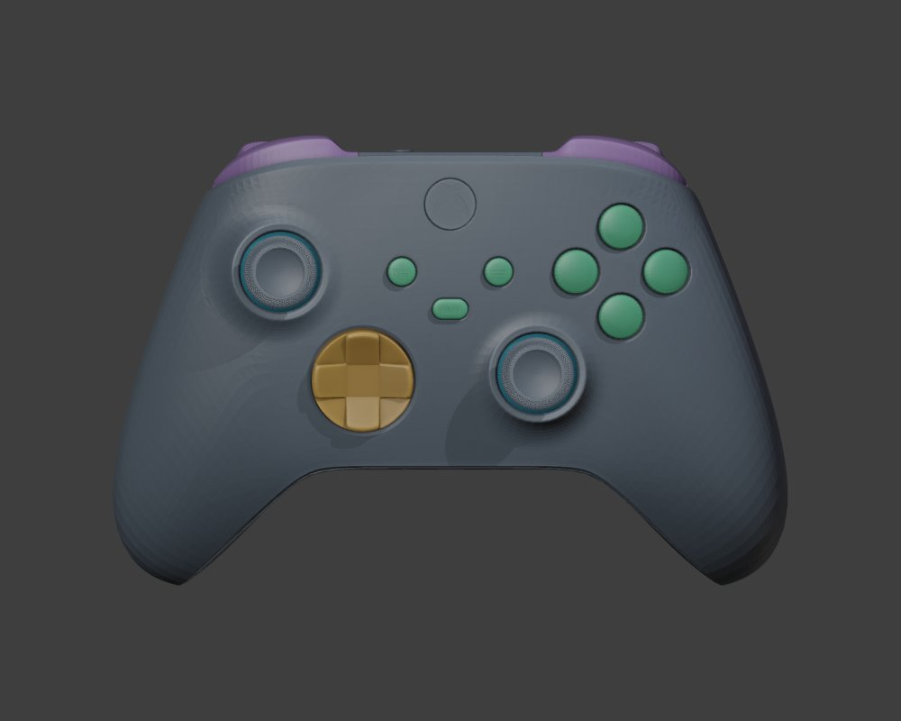
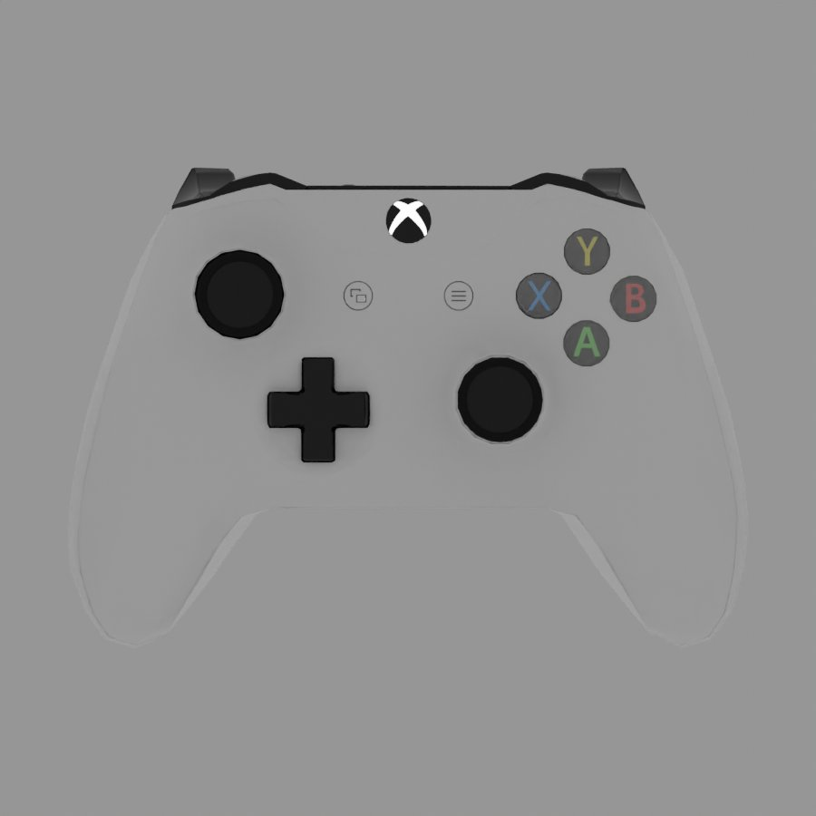
4.2 尺寸标定的尝试
为了获得真实的轴心和尺寸，我们尝试从 1708 的 FCC 认证文件中读数 [17]。FCC 是美国联邦通信委员会，它公开的文件里有设备的内部照片。
- 标尺换算：
- 第 7 页的照片中有两把互相垂直的标尺，换算为 5.915 像素/毫米，留出的两个刻度的残差为 −2.9 和 −1.4 像素；
- 两根摇杆轴在标尺平面上的换算间距约 64.2 mm；只改变中心读数时，结果在 62.2–66.3 mm 之间；
- 这个范围没有计入透视、深度和镜头畸变，我们只把它当作诊断参考。
- 电路板（PCB）照片配准：把扫描图与照片上的电路板对齐，借照片里的标尺读出尺寸。
- SIFT 是一种自动寻找两张图中对应特征点的方法。按比值筛选后得到 17 个唯一的候选匹配，用其中 11 个拟合，只有 6 个是内点；留出点误差的中位数为 315.7 像素；
- 把扫描图镜像后只有 7 个候选匹配，无法拟合；
- 改用人工标注的孔位做平面拟合，3 个留出点在照片中的误差为 1.8、6.0、1.8 像素，但仍然得不到公制尺度。
- 其他参考：开源手柄 Alpakka 的 CAD 常数逐项核对过，只作参考，没有采纳。
4.3 其他候选
- Switch Pro（Wesk 扫描）：Unlicense 许可，只有外壳，没有按键和摇杆。
- Switch Pro（Meshy AI 网格）：整件只有一个 31.7 万面的网格，没有分件。
- Thingiverse 上的 Xbox One S 线索：一个的原件可用性未查明；另一个只有前面板，且下载接口返回 401。
这些候选我们只存档，没有采用。
4.4 选定 BatonyRobson 模型
BatonyRobson 在 Sketchfab 上发布的 Xbox One S 手柄模型 [1]，采用 CC BY 4.0 许可，有以下特点：
- 16 个独立网格：机身、ABXY、十字键、两根摇杆、肩键、扳机、View/Menu、Xbox 键和配对键；
- 带骨骼和 4 段 FBX 动画；
- 2K 贴图齐全。
按仓库记录，负责人在 2026-10-08 确认 Xbox One S 为目标实物、这个模型为目标外观（references/xbox_replacement_candidates.json）。原始 GLB 原样保存在 assets/xbox_one_s/source/。
尺度和坐标：
- 只做整体缩放：
scripts/build_kinematics.py第 160 行用厂商公布的整机宽度除以模型 X 方向的范围，得到 0.0560472180107161 米/原生单位； - 坐标从 glTF 的 (x, y, z) 转换为仿真系的 (x, −z, y)，Z 轴向上；
- 这个比例只保证整机宽度正确；局部尺寸、内部结构和关节位置都没有实测。
运动先验：作者动画给出了各部件的运动方向、轴心和行程。我们在审计中把它们标为“作者动画先验”，因为它们来自美术制作，没有经过测量。
小结：外观身份由负责人确认；尺寸只校准到整机宽度；所有标定尝试都没有得到可用的公制尺寸。
5 实验组二：外观复现
目的：确定外观标准，让查看器和仿真器中的外观接近这个标准。
5.1 外观标准
Sketchfab 网页查看器里的外观是作者认可的效果，但 Sketchfab 的生产渲染器不开源，公开资料只够截取官方画面作参考。我们用 Viewer API 1.12.1 截取了官方画面，记录了环境曝光 1.543、灯光强度 3 和相机位置。
随后在 Blender 中做了三组对比：
- 3.6.23 和 4.5.9 两个版本的官方 glTF 导入；
- 只改变 Filmic 与 Standard 两种显示变换；
- 几张有许可的 HDRI 环境光。HDRI 是记录四周真实光照的全景图。
贴图解码诊断中有一个变体 UV 错位，它只用于诊断（附录 B）。
按仓库记录，负责人最终选定：Poly Haven 的 Boiler Room 环境光 [18]，强度 1.0，Standard 色彩变换，垂直视场 35°，分辨率 1600×900，64 次采样（图 3）。
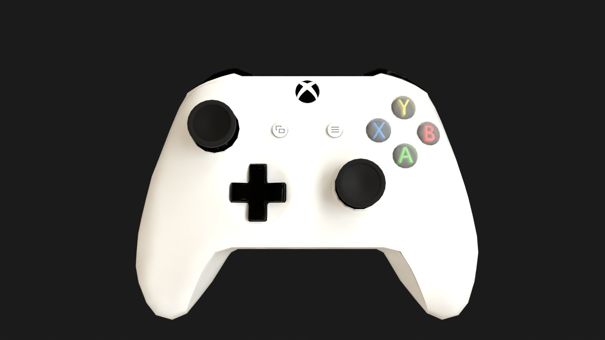
5.2 交互查看器
交互查看器让人用鼠标或真实手柄拖动虚拟部件，检查运动方向和轴心。先后做过以下调整：
- 透明部件：查看器用浏览器端的三维库 Three.js 绘制拾取用的场景。Three.js 默认的透明混合会让透明按键出现黑白面片和错误遮挡。我们固定网格、相机、姿态和光照，只改透明绘制方式，最终采用开启多重采样的 alpha-to-coverage，即用像素内多个采样点的覆盖比例来近似半透明。
- 高光贴图：静态导出时，原 GLB 的
specularTexture变成了specularColorTexture，摇杆表面的细节因此丢失。改为直接读取原 GLB 的完整材质后，细节恢复。 - 撤回的方案：我们曾把 Blender 的灯光和 Filmic 设置迁移到浏览器端（提交
c6d4af3），14 分钟后撤回（4a753d4）。按approved_cycles_reuse/README.md的记录，负责人指定了历史 Cycles 图作为标准，于是撤回了灰色环境、Filmic 和 WebGL 的适配（附录 C）。 - 直接用 Cycles 出图：查看器画面改由常驻的 Blender/Cycles 进程绘制，浏览器只负责拾取和坐标计算（
914490f）。复现画面与选定图相比，8 位 RGB 三个通道的平均绝对误差为 0.0041、0.0044、0.0049，单通道最大差为 5、4、5。 - 摇杆拖动：把摇杆拖到圆形边界外再拉回时，旧求解器会把迭代点停在方形区域的圆外部分，摇杆因此不回中。改为在单位圆内迭代后，“拖到边界外三倍距离再返回”测试中，所有返回点的坐标误差都小于 0.004；在全新克隆的仓库中复测，误差小于 0.005。这些都只是软件层面的检查。
我们还试过在 Blender 原生视口中实时拖动左摇杆（native_viewport_pilot），每个条件只测了一次：
- 输入到姿态更新只要 2.2–7.0 ms；
- 首次画面变化要 148–207 ms，连续画面变化约 4.9–6.4 次/秒；
- 换用 NVIDIA 显示合成、或在拖动时降低分辨率，都没有提高更新频率。
瓶颈没有查明，这个方案没有推广。
5.3 仿真器中的外观
RoboTwin/SAPIEN。16 个部件以纯渲染实体加入 RoboTwin 的标准实验台，台面按负责人要求改为中性深灰（图 4）。按仓库记录，负责人回复“可以，通过”。
- 原生相机 1600×900、光线追踪 32 次采样，相机移动时约 12.3 FPS。这个数包含桌面、墙面和 CPU 读取图像的开销，不代表训练吞吐。
- SAPIEN 3.0.0b1 没有环境光遮蔽（AO）贴图槽，高光只支持标量，我们因此设
specular=0.5。
MuJoCo 3.15。
- 原生渲染器：模型能加载，EGL 离屏渲染约 531 FPS；GLFW 原生窗口在软件显示路径下约 31 FPS。首帧黑屏是因为缺少
mj_forward，补上后消失。UV 的vflip经单变量对照确定为true。原生渲染器只使用底色贴图和标量高光。 - Filament 渲染器：我们为它补上了不透明度贴图支持（fork 补丁 [22]）。第 6.3 节 V01–V07 检查视频中，MuJoCo 一侧就是用打过补丁的 Filament 实际渲染的。但补丁版的正式构建、官方版与补丁版在最小场景上的对照、负责人对 MuJoCo 外观的验收，都还没有完成。
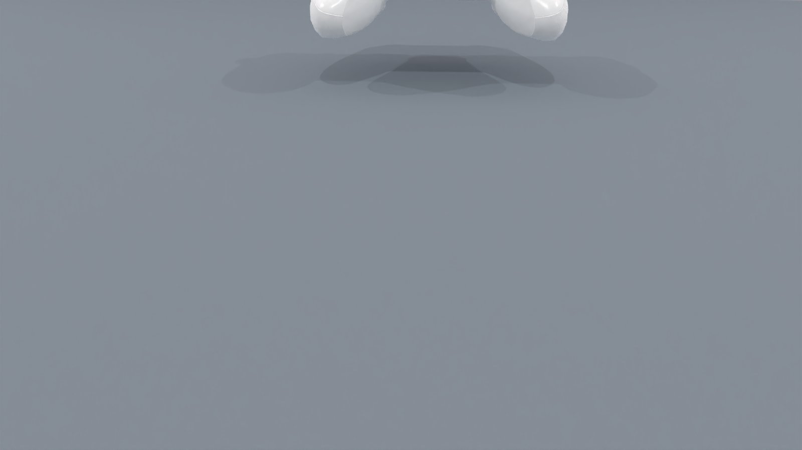
小结：查看器和 RoboTwin 中的外观达到了负责人认可的标准；MuJoCo 的外观迁移尚未完成；灯光与 Filmic 的浏览器适配方案已撤回。
6 实验组三：运动学、信号接口与仿真后端
目的：定义关节与信号，接入两个后端，并检查控件能否被外力推动。
6.1 运动规格
我们把 20 个活动关节的拓扑、轴和轴心、运动范围、摇杆的圆形约束和信号绑定，统一写进一份运动规格（构建后位于 common/xbox_one_s/motion/full_controls.json）。两个后端和信号控制器都读取这一份规格。
- 轴心和行程来自作者动画；
- 摇杆最大倾角取 23°（0.4014 rad），即 ALPS 参考摇杆模块的规格值 [19]；
- 两个倾斜轴若各自独立取到 23°，对角方向的实际倾角会达到 32.1°。因此运动规格加了一条二维圆形约束（
stick_envelope.json），作为保守近似。
6.2 左摇杆物理切片
在接入全部控件之前，我们先在 SAPIEN 中只做左摇杆（robotwin_left_stick_estimated_v0），时间步长 1/240 s，检查了以下几项：
- 信号映射：中立、单轴两端和对角的映射都正确；对角经径向投影后，信号半径为 1。
- 自动回中：从 (0.2, −0.1) rad 释放后回到数值零点，末态约 1e-27 rad。
- 接触推动：运动学物体按脚本给定的轨迹移动，不受力的影响。一个 6 mm 的红色运动学球通过物理接触，把摇杆推到约 −0.301 rad（
left_x ≈ −0.75）；球移开后摇杆回中。 - 敏感性：时间步长 3 档 × 移动质量 3 档（2–10 g）× 摩擦与恢复系数 3 组，共 27 组，全部通过。
按仓库记录，负责人看过视频后确认“效果正确”（提交 bdf0334）。
6.3 完整控件与两个后端的对照
full_controls 包含 20 个关节、21 个游戏通道和 Pair 物理事件。参数的取法如下：
- ABXY、小按钮和肩键：刚度 = 参考开关的操作力 ÷ 作者动画的行程。参考开关是 ALPS SKPMAME010，操作力 1.57 N [20]。
- 摇杆按压：采用 ALPS 摇杆的规格，7.4±3 N、0.4 mm [19]。
- 扳机：借用摇杆操作力矩 0.014 N·m 的量级，标为占位值，因为没有扳机的实测数据。
- 单向控件的预紧：设为行程的 1.5%。不加预紧时，MuJoCo 中的扳机在重力下会停在行程的 1.216% 处。
我们在 references/full_controls.json 中为所有参数记录了来源、适用范围和替换计划。两个后端的检查结果见表 2。
| 指标 | RoboTwin（SAPIEN 3.0.0b1） | MuJoCo 3.15.0 |
|---|---|---|
| 关节数 / 可用通道数 | 20 / 21 | 20 / 21 |
| 写入状态再读回的最大误差 | 2.02e-8 | 1.11e-16 |
| Pair 事件往返误差 | 5.4e-9 | 0 |
| 被动回中：末态与初态之比（见正文说明） | 1.3e-6 | 1.2e-3 |
| 两后端各通道端点的最大差 | 3.7e-8 | |
表 2 中“被动回中”一行的算法：把 20 个关节偏离中立的绝对值直接相加，取释放后与释放前之比。滑动关节的单位是米，转动关节是弧度，两者直接相加，所以这个比值只是内部比较用的数值摘要，不代表统一的物理位移。
我们还生成了七组逐项检查视频（V01–V07）。左侧是 RoboTwin，右侧是 MuJoCo；右下角叠加 gamepad-overlay [13] 绘制的虚拟手柄，它读取的是实际回读的关节状态。
- V07 中，红球通过碰撞推动左摇杆：RoboTwin 的峰值信号为 0.7485，释放后为 5.95e-10；MuJoCo 的峰值为 0.7415。
- 这些视频的逐项验收还在待确认清单中。
我们还在固定版本的 RoboTwin（提交 ea8b211）中，通过真实的 Base_Task.load_actors 生命周期加载了完整手柄 [15]：
- 手柄与双臂 ALOHA 机器人同处一个场景；
- 并发写入状态再读回，最大误差为 1.2e-8；
- 重建 episode 后，手柄从中立状态开始。
这项检查不涉及机器人与手柄的接触。
6.4 球体接触套件与自由根晃动
球体接触套件。19 个控件，分别在固定根（机身固定）和自由根（机身可移动）两种情况下用球推动，共 38 段视频，三个机位（图 5）。
- 38 段都检测到接触，固定根时的最小峰值信号为 0.897。
- 自由根时，推左右扳机得到的信号只有约 0.0003，同时整机位移 4.1 mm 和 3.0 mm：没有夹具提供反作用力时，球推动的是整个手柄。
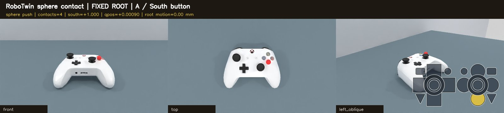
自由根诊断。（free_root_excitation_diagnostic*）在无重力下做了四段测试：
- 无刺激：信号全为 0；
- 对机身施加 0.6–1 N 的周期外力和 0.03–0.05 N·m 的外力矩：摇杆因惯性自己偏转，单轴信号峰值约 0.016，超过了 0.01 的死区；
- 动态球撞机身，自由根：摇杆信号峰值约 0.003；
- 动态球撞机身，固定根：信号为 0。
诊断的 v2 和最终版只重新制作了视频和叠加画面，没有重跑物理。
摇杆摩擦。我们用二分法搜索四个摇杆倾斜关节共用的 PhysX 关节摩擦系数：
- 信号阈值取 1e-4 时，摩擦系数为 0 和 128 都会产生信号，二分没有可用的区间；
- 阈值改为 0.01 后，临界值落在 0.07612 与 0.07617 之间。
按仓库记录，负责人据此把摩擦系数设为 0.1（d79278d）。这个值是仿真设置，Xbox 实物的对应参数还没有测量。
6.5 基本体碰撞与质量（第 8.8 节之前提交的版本）
在第 8.8 节之前，仓库中提交的碰撞体是按视觉包围盒手工拟合的基本几何体：
- ABXY、View、Menu、Guide：圆柱；
- Pair 键、肩键、扳机：缩到包围盒 90% 的盒子；
- 十字键：两块交叉的盒子；
- 摇杆：三段同轴圆柱；
- 外壳：只有一个中心支撑块，加上两个摇杆开孔处的环形挡块（gate）。
质量按以下规则估计：
- 运动部件：质量 = 基本体体积 × 1050 kg/m³（假设的塑料密度）× 填充系数。填充系数为按键 0.65、十字键 0.4、肩键和扳机 0.35。质量不低于 0.2 g。
- 中间连杆：每个固定为 0.5 g。
- 惯量：对角惯量不低于 1e-10 kg·m²。
- 机身：取 0.28 kg 减去其余部件后的剩余质量。
这套基本体足以完成第 6.2–6.4 节的信号和推压检查。但外壳几乎没有可以抓握的碰撞面，不能用于灵巧手抓取，第 7、8 节就是为了替换它。
小结：两个后端的信号链路一致，控件能被外力推动；摇杆摩擦是根据晃动诊断选定的仿真设置；基本体碰撞不能支持抓取。
7 实验组四：碰撞体——从体素分块到闭合底模
目的：为灵巧手操作生成碰撞体。2026-10-10 02:03 前后，负责人提出四条要求：手柄会被拿起来；不预先假定灵巧手型号；只生成一套碰撞资产；只推进 RoboTwin 后端。负责人还要求由主助手设计方案、在后台交给执行代理实现。
7.1 早期整件分解与碰撞体 v2
最早的两次尝试，是把整件机身直接交给 CoACD 分解（图 6），得到 64 个凸块。从文件名（second_swept_clearance）看，第二次加入了对按键运动范围的避让。这两次只留下了预览图，参数没有记录，也没有被采用。
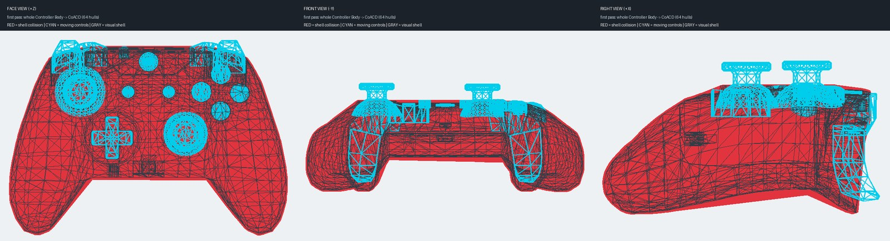
碰撞体 v2（collision_v2_review）的做法分三步：
- 把 16 个开口的视觉部件以 0.35 mm 的体素实体化，再用 marching cubes（从体素网格提取三角网格表面的标准算法）重建表面；
- 按功能区分组：外壳分握把、正面、背面、肩部和开孔边缘，摇杆分帽面凹坑、帽缘和杆身，十字键分五区；
- 每组求凸包。
外壳凸块还要避开按键的运动范围：沿运动规格采样每个控件扫过的体积，加 0.30 mm 的间隙，外壳凸块的顶点不进入这个体积。这一项只检查了顶点，没有证明连续表面也不进入。
结果是 3694 个凸块，每块最多 57 个顶点（图 7 为左握把特写）：
- 加载与步进：首次加载 7.0 s，空载每步 1.0 ms。
- 外胀：各功能区外胀的 95 分位数都小于 1 mm，即 95% 的采样点不超过 1 mm；但有几处超过了拟定的手指接触区目标 0.80 mm。
- 固定根球探针：19 项都有接触，但左右扳机的信号为 0。
- 细探针：沿握把的三条细探针路径都没有接触。
- 双指垫抬放：用双指垫抬起再放下自由根手柄，根部高度依次为 32.4、121.8、30.2 mm，释放后却升到 48.0 mm（原因见第 7.2 节的 H3）。
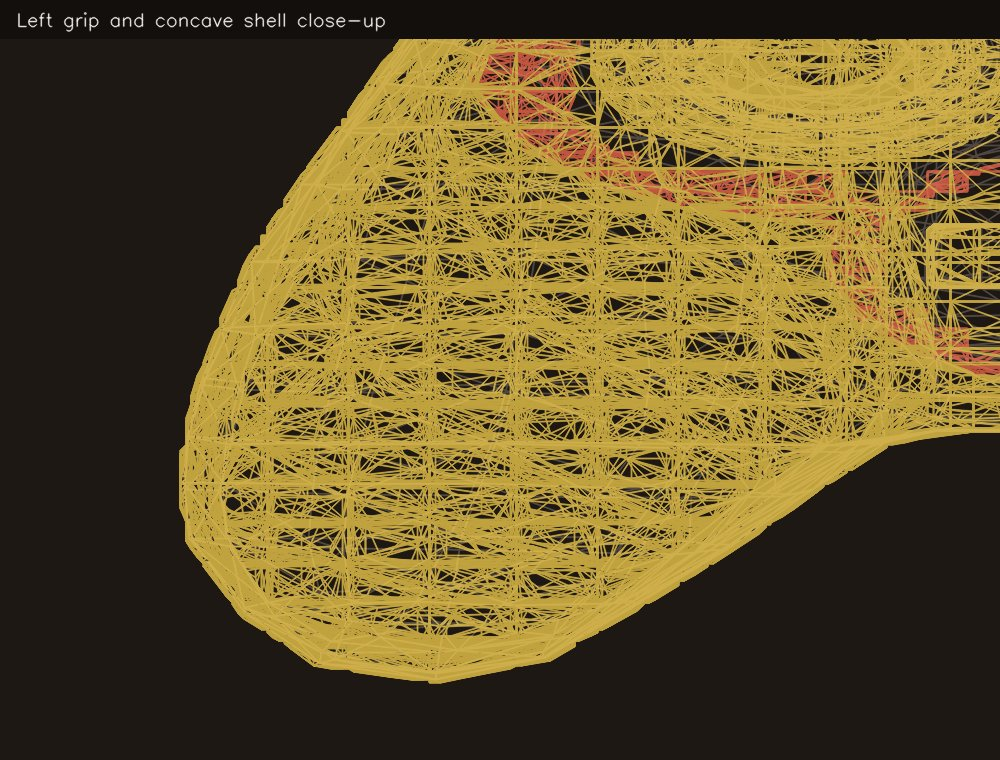
7.2 v2 的诊断
2026-10-10 09:43 前后，负责人要求先确认问题是否真实存在、原因是否如我们所说，再动手修。执行代理随后只做诊断、不做修改，对 8 个假设逐一做对照（collision_v2_diagnosis）。
执行代理在诊断中先发现：SAPIEN 探针没有显式设置接触偏移时，取的是默认的 10 mm。改为 0.2 mm 后，相关实验全部重跑；旧结果只用于复现原先的失败。各假设的结论如下：
- H1 空心薄皮（证实）：
- 机身的碰撞厚度中位数只有 0.85 mm；向内 2 mm 处，只有 4.3% 的点还在碰撞体内；
- 自由根时用 2 N 恒力压左握把，探针深入 31.05 mm；同一点换成实心对照，只深入 1.37 mm；
- 原因是控件开孔让内腔与外界连通，体素的“填充孔洞”操作因此没能把外壳填实。
- H2 握把零接触（测试装置问题）：三条路径在离线几何上都与碰撞体相交，碰撞组也允许碰撞。原因在于“固定根机身 + 运动学探针”这种组合本身不产生接触；换成动态探针后可以命中。
- H3 释放后高度上升（测试装置问题）：释放时，右指垫仍与手柄交叠，最深 −4.67 mm。求解器把交叠推开，手柄单步上移 3.62 mm，随后侧翻约 −81.8°，以另一种姿态落在桌上。指垫移开时，没有按手柄的实时位置确认已经完全清除。
- H5 扳机有接触却不动（测试装置问题）：原先的“接触”是 10 mm 偏移产生的零冲量接触；换成正确的偏移和推动方向后，扳机能正常转动。另外，运动学探针可能把扳机强行推过限位。
- H7 加载耗时：首次加载 6.4 s，同一进程中后续约 0.45–0.50 s，多出的时间来自首次 cooking。另一项在真实
setup_demo中计时的实验，因 Vulkan 环境报错，没能走到资产加载这一步。 - H8 0.2 mm 偏移下会漏检（否定）：速度在 0.01–0.5 m/s 之间时，400 组碰撞全部检出了首次接触。
- H4 开孔卡指、H6 接缝（无定论）：旧的二维投影代理有假阳性：在 45 次 2–4 mm 球的插入测试中，没有一次真正进入缝隙。接缝问题没能形成可以配对比较的统计。
7.3 用灵巧手抓取检验碰撞体
为了直接检验碰撞体能否支持抓取，负责人提议用父目录中的 LinkerHand G20 左手模型 [14] 抓起手柄，并要求看渲染视频（2026-10-10 11:14–11:18）。这个手模型有以下情况：
- 厂商 URDF 直接用视觉 STL 作碰撞，SAPIEN 把每个连杆烘焙成一个凸体，掌部凸包外胀的 95 分位数达 5.24 mm；
- 5 个联动（mimic）关节需要在每一步手动跟随；
- 驱动参数没有 SI 单位的标定，实验中全部用显式的测试值；
- 这份 URDF 与负责人实物的硬件版本是否对应，还没有确认。
v1（g20_grasp_v1）：
- 设置：不用机械臂，手腕由一个限力的六自由度驱动控制，手指执行预设的合拢动作。比较三个条件，每个条件 10 个 episode。一个 episode 指一次完整的接近、合拢、抬升、保持、扰动和放下流程。
- 成功门槛：抬升至少 70 mm，保持阶段末尾高于 60 mm，扰动阶段最低不低于 50 mm。
- 结果：
- 当前手柄、左握把局部实心化、同尺寸 0.28 kg 盒体三个条件都是 0/10；
- 最大抬升依次为 37.7、10.3、0.13 mm；
- 最大穿透：主条件 14.96 mm，实心对照 25.06 mm；
- 主条件的每个 episode 都误触了左摇杆、L3、左肩键、左扳机和十字键下。
- 判读：盒体也抓不起来，说明这套完整的抓取设置本身就不足，包括开环动作、粗糙的手部凸包、手动 mimic 跟随和测试驱动值。本实验无法分离这些因素各自的贡献，也不能用来评价手柄碰撞体。
v2 A 轮（g20_grasp_v2/roundA）只做纯几何筛选，物理步数为 0。门槛在过程中改过多轮，见表 3。表中“主助手”就是执行报告里的“审阅者”；最后一轮修订由主助手提出、负责人确认（据执行报告的记录）。
| 阶段 | 旧条件或做法 | 新条件或做法 | 提出者 | 结果 |
|---|---|---|---|---|
| A1 掌坐标 | 原方向门槛 | 按实测关节方向重新定义；拇指留到 A3 用接触法向判定 | 主助手 | 通过 |
| A2 握把区域，第 1 版 | 按截面厚度找“谷”来分界 | — | — | 找不到谷时回退到中央平面，混入了机身，作废；修复后主轴与 −Y 的夹角为 88.1°，仍未通过 |
| A2 握把区域，第 2 版 | 厚度谷方法 | 主助手给出中心线定义：从摇杆枢轴到握把末梢，垂距不超过 25 mm | 主助手 | 末片厚度 12.87 mm，小于 15 mm，停止 |
| A2 区域门与停止规则 | 全段厚度 15–50 mm；任何门槛失败都停止 | 厚度只在 t∈[0.15, 0.90] 内判定；只有支撑台稳定性、竖直净空和 A3 候选数是关键门槛 | 主助手 | 区域通过 |
| A2 支撑台 | 单个盒子支撑 | 1–2 个盒子，只托机身中央和右半 | 主助手 | 单盒时手柄倾覆（质心在支撑范围外 52 mm）；改后稳定，但水平净距 1.97 mm（要求 ≥15 mm）、质心距支撑边缘 7.8 mm（要求 ≥10 mm），按非关键项记录 |
| A3 第 1 轮 | — | 324 个候选，拇指从 q=0 同步合拢 | — | 0/324：拇指始终没有有效接触握把，停止 |
| A3 第 2 轮 | 拇指 q=0；条件 (c) 要求拇指接触握把 | 拇指预对掌（4 组预置）；yaw 取 0–330°；(c) 放宽为拇指接触机身任意位置 | 主助手提出，负责人确认 | 8640 个候选中 1 个通过（#878），少于 3 个，停止 |
执行代理在实现中修过三类错误：手指中节的名称写错；mimic 关节的步长超出范围；ε 计算两次触发 Qhull 数值异常，其中第一次扫描时 27 个工作进程因此退出。修复后，387 个 ε 值全部复核，没有改变任何一项通过判定（附录 B）。
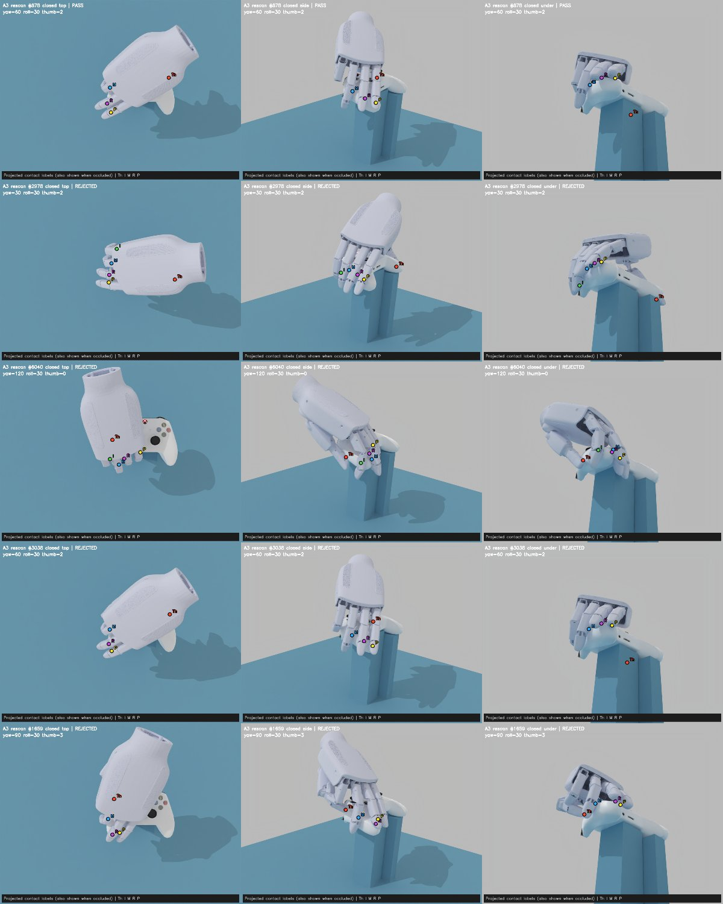
负责人看过图 8 后（2026-10-10 13:43）指出：现实中的抓取，是手掌贴住物体的一面，手指绕过侧面，指尖压到对侧；只在上表面点几个指尖，抬手时手柄不会跟着离开桌面。主助手随后检索了抓取分类与评价的文献（第 3.3 节）。负责人认为抓取实验已经绕了远路，决定回到碰撞体的生成本身（13:49）。
7.4 外壳闭合实验
负责人提出了一条简化思路（13:54）：控件与机身之间不检测碰撞，因此外壳可以看作一个独立的闭合体，按键开孔处按“可触表面按到底时的最低位置”封口。此后负责人又陆续给出几项规定：
- ABXY 和摇杆的近圆形开孔直接齐平封平（14:24 前后）；
- USB 口和下侧接口的凹槽太薄、太不规则，改为填实；十字键和配对键的凹坑保持原样（15:11–15:13）；
- 只用 Blender 精确布尔求解，不做体积重建（14:35）。
按这些规则，执行代理做了两轮自动闭合：
- v1（
shell_closed_v1）：原始主壳的 4068 个面中已有 43 对互相穿插的三角面（图 9）。自写的严格交线检查与 Open3D 得到的结果完全一致。仅靠新增补面无法消除这些已有的交叉，于是按门槛停止。 - v2（
shell_closed_v2）：经授权先修复折叠片，之后又在四处先后停下：- 前板内表面 1135 个样本中，有 400 个没有埋入主壳；
- 精确布尔并集后出现非流形；
- 前板缝隙桥接之后，从外部逐格扩散可达区域（“洪泛”），仍有 1,648,794 个体素可达；桥接前是 1,705,908 个，只减少了约 3.35%；
- 正面窗口的外沿只找到 4 条开放的折痕链，没有闭合环。
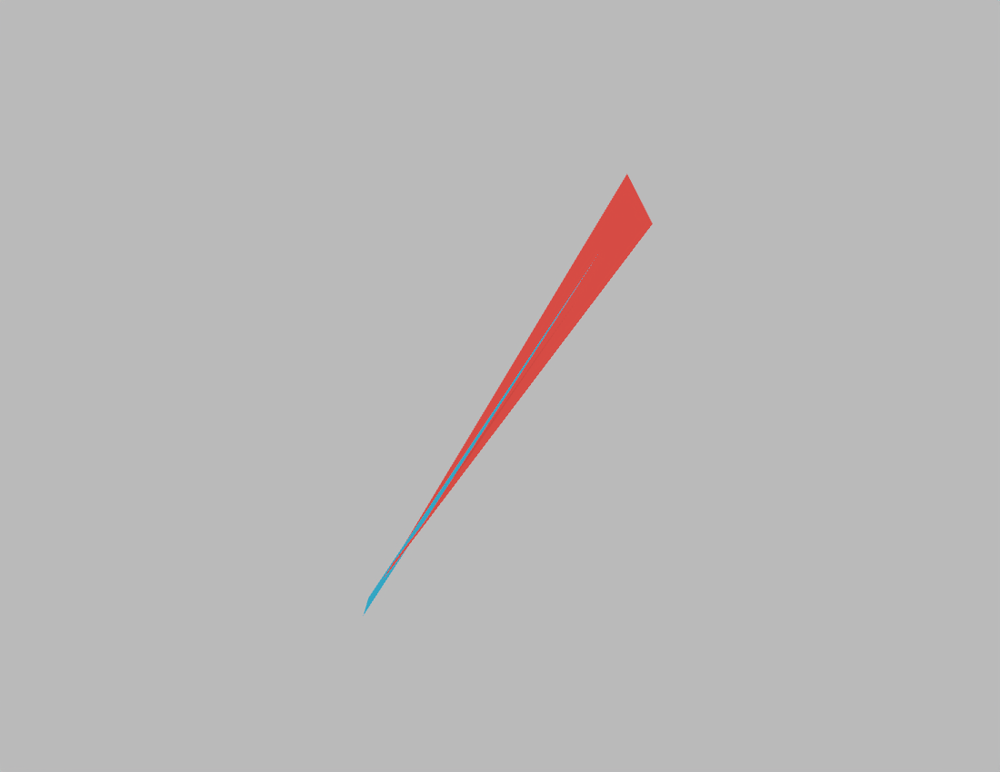
自动方法连续受阻后，负责人问手工修改是否更快（17:30），并要求导出一个可以接着编辑的版本（17:54）。执行代理导出了一个自包含的 Blender 文件包（shell_closed_v2/manual_kit），附 26 张参考图。
负责人在 Blender 中检查后决定（18:46）：主壳与前板已经各自是独立的闭合网格，分别生成碰撞体即可，不再合并；顶边凹槽也保持原样。
7.5 碰撞底模 meshbase v1
负责人随后要求整理一份正式的中间资产，并保证每个独立组件都是闭合图形（18:48）。这就是 assets/xbox_one_s/collision_meshbase/（提交 9bf91a3）：17 个组件、19 个独立闭合壳、6882 个三角面（图 10）。
各组件的处理：
- ABXY：只保留键帽，字形装饰片和零厚度的视觉底片整块排除。负责人的判断是，这份资产只用于生成碰撞体，保留可触碰的外形即可（19:14–19:17）。实现时曾把 A、B 的字形片误认为主块，后来改为按 64 面的键帽几何来识别（附录 B）。
- 摇杆：主体和帽沿防滑环分别封闭，允许两者在同一组件内重叠。
- 其余控件：隐藏开口都用质心扇形补面封闭，并通过了严格交线检查。
- 主壳与前板：沿用手工文件包的结果。
检查结果：
- 每个壳都闭合、流形、法向一致，体积为正。
- 以 0.35 mm 体素化后，测量向内 0.5 mm 和 1 mm 处的覆盖率。有些薄区沿法向往里不到这个深度就穿出了另一侧，这些点不计入分母。在其余可测样本上，最低覆盖率为 99.995%（十字键 0.5 mm 处），其余都是 100%。
- 薄区排除最多的是 Guide 键：在 1 mm 深度处排除了 85.7% 的面积，只剩 2869 个可测样本。
- 主壳有 10 对自交，当时按非关键项记录。
负责人决定把这份资产作为冻结快照分发，生成器只记录它是怎样做出来的（21:07）。理由是：它依赖一套反复调整过的自动化流程，上游视觉模型以后即使变化，已有的底模和碰撞体仍可复用。
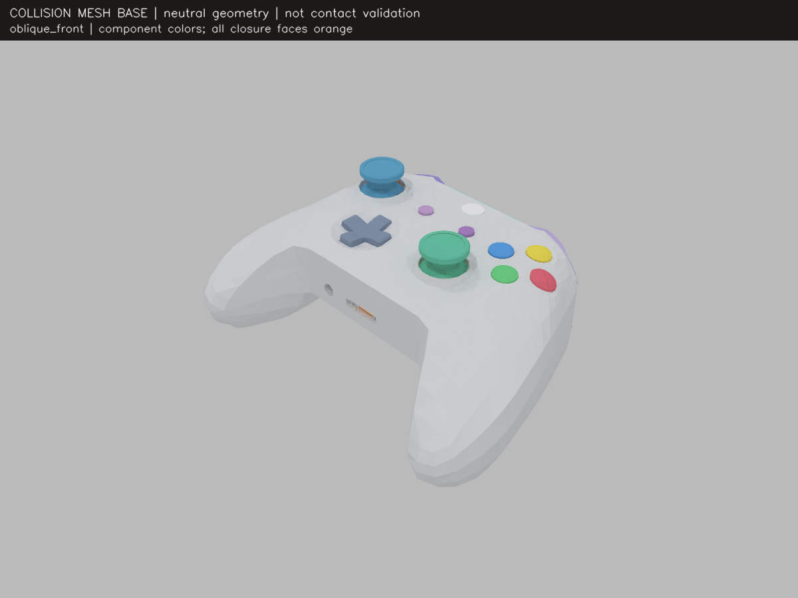
小结：体素分块路线的问题出在输入，它分解的是空心薄皮。抓取实验暴露的是手模型和抓取策略的问题，无法用来评价碰撞体。自动闭合因原始网格自交而一再停止，最终在负责人手工检查后确定方案，得到 17 个组件各自闭合的碰撞底模。
8 实验组五：碰撞方法调研、SDF、CoACD 扫参与接入
目的：在碰撞底模的基础上选定碰撞体的生成方法和参数，并接入资源流程与加载接口。
8.1 调研结论
根据第 3.1 节的结果，我们把碰撞底模定位为“修成闭合实体”这一步，接下来对每个组件分别做凸分解，并用双向表面偏差衡量精度。
v2 的问题在于它分解的是空心薄皮，这不说明凸分解路线不可行。
若需要更高的精度，另一个选项是 SDF，因此我们先确认 SDF 在 RoboTwin 的软件栈中能不能用。
8.2 SAPIEN 3.0.3 与 SDF 的可用性
升级 SAPIEN。RoboTwin 上游 main 分支（2026-09-24）仍固定 SAPIEN 3.0.0b1，安装脚本还会直接改写 SAPIEN 的 URDF 读取代码。负责人 fork 了 RoboTwin，要求尝试升级（2026-10-11 01:05）。我们在本地克隆中提交了 57d8e95（未 push），只改了依赖版本，以及安装脚本中一处 URDF/SRDF 的 UTF-8 读取补丁。
执行中出过三处问题：
- 主助手起初把 GPU 节点错指为另一台共用机器 SHARED_GPU_NODE。负责人纠正（01:15–01:21）：GPU 节点是 GPU_NODE，网络 profile 应按节点命名。
- 在 GPU_NODE 上，用 conda 离线克隆环境 A 两次失败，手工补链接后的版本也作废。最终，环境 A 直接只读使用负责人已有的基础环境（3.0.0b1）；环境 B 是叠加在 A 之上、只换了 SAPIEN 3.0.3 的虚拟环境。
- 开微波炉任务 seed 0 的记录器提前退出，这次运行单独记录在案。
A/B 对照。用 RoboTwin 自带的专家脚本（手写的规划程序，用来自动生成示范数据）采集 7 组任务配置，每次采集由一个随机种子（seed）决定场景的随机摆放：
- A 的 29 次尝试中，有 20 个 seed 成功，作为关键 seed；
- 这 20 个 seed 在 B 中成功了 19 个；失败的是开微波炉的 seed 5，专家规划没能找到可行的抓取位姿；
- 开微波炉的 4 个 seed，又在两个环境中各重复了 3 次（表 4）。
同一版本、同一 seed 的重复结果并不一致，例如 A 中 seed 1 依次为失败、失败、成功，我们据此判断专家脚本本身有随机性。seed 5 在 A 中 3 次全部成功，在 B 中 3 次全部失败，但 3 次重复不足以把原因确定为版本差异。负责人随后决定不必保证升级前后行为完全一致（03:22），对照到此为止。
| seed | A：SAPIEN 3.0.0b1 | B：SAPIEN 3.0.3 |
|---|---|---|
| 1 | 失败、失败、成功 | 失败、成功、成功 |
| 5 | 成功、成功、成功 | 失败、失败、失败 |
| 7 | 失败、失败、成功 | 失败、成功、成功 |
| 8 | 失败、失败、失败 | 失败、失败、失败 |
手柄包在 3.0.3 上的检查。在 B 环境中，对本仓库快照 822f437 做了四项检查：资源构建、冒烟测试（只检查能否加载和运行的最小测试）、渲染检查、fast 回归。四项的退出码都是 0。冒烟结果为 sapien=3.0.3、20 个关节、21 个通道、passed=true，往返误差 2.02e-8（remote/results/xbox/）。这些结果只代表当时的快照；修复后的版本见第 8.8 节。
碰撞配对探测。在 3.0.3 的 CPU 物理下，让一个 10 cm 的立方体从 0.3 m 高处落到不同类型的支撑面上（sdf_pair_probe_20261011）。480 步后，高度与预期之差小于 1 cm 判为“能”。结果见表 5。
| 下落物 ＼ 支撑面 | 平面 | 静态盒子 | 静态凸体 | 静态多凸块 | 静态三角网格 | 动态凸体 / 多凸块 | 动态 SDF | URDF 连杆（多凸块） | 铰接连杆（SDF） |
|---|---|---|---|---|---|---|---|---|---|
| SDF 立方体 | 不能 | 能 | 能 | 能 | 不能 | 能 | 不能 | 能* | 不能 |
| 凸体立方体 | 能 | 能 | 能 | 能 | 能 | 能 | 能 | 能* | 能 |
表 5 的说明：
- 标 * 的两格：首次运行时，测试用的 URDF 只有一个连杆，这两个用例崩溃、没有输出。补上第二个连杆后重跑，结果原样存于
results_rerun_cases_8_18.txt，内容取自会话记录，远端没有另存。 - 静态物体用同一接口加载非凸网格时，SAPIEN 不会自动开启 SDF，得到的是普通三角网格。
- “铰接连杆（SDF）”一列测试的是固定根的单连杆，没有测试完整的 20 关节手柄。
我们从表 5 得出对手柄的三点含义（限于这个版本和这个测试设置）：
- 灵巧手和机械臂的连杆是凸体，RoboTwin 的桌面是盒子，两者都能与 SDF 手柄碰撞；
- 用
add_ground创建的无限平面接不住 SDF 手柄； - 两个 SDF 物体之间不会碰撞。
8.3 CoACD 扫参的设计与指标修正
扫参范围。我们在本地扫参（collision_sweep_20261011），使用 CoACD 1.0.14，seed=0，单线程：
- 外壳和十字键：
threshold取 0.05、0.03、0.02、0.01，max_convex_hull取不限和 32，各 8 组； - 左摇杆两层壳：各取 0.03 和 0.05；
- 前板、左扳机、A 键：只跑默认参数；
- 外壳另补一组 decimate 对照和四组预处理对照；
- 另做 7 次确定性复跑；第 8.6 节修复外壳后又补跑两组。
右侧组件和其他小控件没有单独扫参，参数沿用结构相同的同类组件，因此不能算逐项实测。
两个开关。
- 预处理：CoACD 在分解前检查输入是否为无自交的流形网格，必要时先用体素重建一遍网格。
auto只在检查不通过时重建，on总是重建，off跳过；分辨率参数决定重建所用的体素有多细。 - decimate：在分解后把每个凸块的顶点数简化到上限以内。
外胀指标前后改过三版：
- 初版：采样点只要不在其他凸块内部（容差 0.1 µm），就算作“外表面”，距离取到原表面采样点的距离。用这个定义，外壳的最大外胀为 16.8 mm。追查后发现，最大点位于两个相邻凸块切面之间约 0.5 µm 的缝隙旁，是内部切面被误算成了外表面。
- 中间版：改用广义绕数判断内外，但距离仍然是到采样点的距离，误差可达约 1 mm。实测外壳上的点到采样点的最大距离为 0.988 mm。
- 最终版：
- 外胀：在每个凸块表面按面积均匀采样，每平方毫米至少 4 个点；用碰撞底模的广义绕数判断内外，只对外部点计算到原表面的精确点到三角形距离。
- 加速：每个点先只检查质心最近的 32 个三角形；再用“第 32 个质心的距离减去最大三角形半径”作为其余三角形距离的下界，判断是否可能漏掉更近的三角形，可能漏掉时就扩大候选集。
- 内缩：在原表面采样，落在任一凸块内（容差 10 µm）的点记为 0，其余点计算到凸块表面的距离。
- 验证：用一个平移 1 mm 的 10 mm 立方体检验，测得 1.000000 mm，误差为 0。
我们报告的最大值是采样点上的最大值，可能略低于连续表面上的真实最大值。
执行中出过的问题（详见附录 B）：
- 首次并行运行 auto/200 时，进程被系统强制终止，同批次记录到一次内存不足终止事件。这与内存竞争的现象一致，但没有按进程核实；改为顺序执行后成功。
- SDF 基准第一次运行时，配置字段名写错（
subgrid_size，实际为subgridSize），那次结果作废。 - 续跑时覆盖了部分早期的文本日志，但结果文件完整。
8.4 扫参结果
小部件用很少的凸块就能贴合：
- A 键 1 块，最大外胀 0.11 mm；
- 十字键在 0.03 时 5 块，最大外胀 0.098 mm；
- 左摇杆主体在 0.03 时 9 块（0.33 mm），0.05 时 4 块（0.67 mm）；防滑环两档都是 20 块（0.26 mm）；
- 左扳机 10 块（0.70 mm），前板 10 块（1.13 mm）。
除 decimate 对照外，各组在采样中都没有发现内缩：原表面的全部采样点，都在 10 µm 容差内落在某个凸块里。这是有限采样得出的结论，不能证明连续表面处处被包含。外壳的结果见表 6 和图 11。
| 参数 | 凸块数 | CoACD 耗时 s | 超限块 | 外胀最大 | 外胀 95 分位 | 外胀平均 |
|---|---|---|---|---|---|---|
| t=0.05，不限块数 | 58 | 91 | 3 | 4.90 | 2.26 | 1.05 |
| t=0.03，不限（默认预处理 auto/50） | 112 | 128 | 4 | 3.37 | 1.70 | 0.89 |
| t=0.02，不限 | 181 | 160 | 5 | 2.80 | 1.51 | 0.83 |
| t=0.01，不限 | 722 | 427 | 4 | 2.18 | 1.17 | 0.70 |
| t=0.01–0.05，上限 32 块 | 32 | 93–466 | 3–14 | 7.10–7.58 | 2.90–3.35 | 1.13–1.24 |
| t=0.03，decimate | 112 | 105 | 0 | 3.37 | 1.70 | 0.87 |
| t=0.03，预处理 auto/100 | 103 | 199 | 9 | 3.12 | 1.44 | 0.59 |
| t=0.03，预处理 auto/200（与 on/200 结果相同） | 118 | 515 | 16 | 3.00 | 1.16 | 0.38 |
| t=0.03，关闭预处理 | 114 | 53 | 0 | 2.68 | 1.15 | 0.27 |
| 修复自交后，t=0.03，不限（off 与 auto 结果相同） | 121 | 38 | 0 | 2.42 | 1.15 | 0.26 |
表 6 的几点说明：
- 外胀只统计凸块表面上落在原实体之外的采样点。以修复后的外壳为例，490,547 个凸块表面采样点中，有 149,602 个在原实体之外。
- decimate 对照中唯一一处非零内缩为 0.40 mm，涉及 0.16% 的采样点。
- 耗时受并行竞争影响，组与组之间的差异不能全部归因于参数。
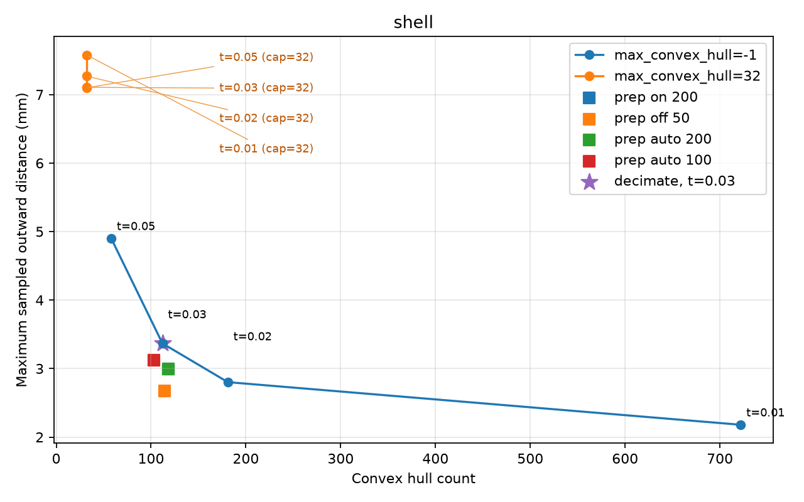
补充检查：
- 可复现性：7 个组件各复跑一次，凸块数、每块的顶点坐标和三角面逐项相同。适用范围为本版本、
seed=0、单线程。 - PhysX 简化：cooking 时 PhysX 会重新简化凸包。外壳原始凸块最多有 1008 个顶点，加载后最多只剩 49 个，所以这一组没有触及 PhysX 的 255 顶点上限。离线指标测的是原始 CoACD 网格，cooking 带来的误差没有量化。
SDF 基准。在 GPU_NODE 的 3.0.3 环境中运行：静态盒子作桌面，对象落在桌上，上方一个受 0.1 N 恒力的小盒子压住它，跑 1000 步，步长 1/240 s。
- SDF 的 spacing（距离场网格点的间距）取 2、1、0.5 mm，三个对象最终的最低点高度在报告精度内相同；
- 外壳的 SDF 预计算分别耗时 0.11、0.29、1.51 s；
- 1000 步耗时：SDF 外壳约 0.078 s，112 块凸体的外壳为 0.237 s；
- 末态：SDF 外壳下沉约 0.196 mm；凸体外壳因为外胀，悬空约 0.45 mm；
- 缓存：同一进程内第二次构建几乎不耗时；换新进程后又回到首次耗时，实验目录里也没有出现缓存文件。可见 SDF 只缓存在进程内。
这项基准中，探针和对象的接触偏移都是默认的 10 mm，两种情况下的对象质量也不同（300.5 g 对 336.6 g）。因此我们只把它看作两种加载方式的整体对比，不把差异归因于某一个物理因素。
8.5 参数选择
主助手根据扫参结果提出了推荐参数表：十字键 0.03；摇杆主体 0.03，防滑环 0.05；其余小部件取默认值 0.05；外壳 0.03、不限块数；SDF spacing 1 mm。负责人看过热力图后，对这张表回复“可以”（2026-10-11 12:58）。
外壳原本有两个选项：
- 关闭预处理：外胀最小、耗时最短，但相当于把有自交的网格直接交给 CoACD；
- auto/200：保留体素重建，但耗时 515 s，并且有 16 块超过 255 个顶点。
负责人选择先修好碰撞底模的自交，并要求把旧版本留档。
8.6 修复碰撞底模的自交
我们沿生成器的每一步追溯 10 对自交的来源，结果分属两处：
- 顶边下方的内斜面（8 对）：源面 4047 是一个长约 23 mm 的三角面，它穿过了 Xbox 键圆孔的侧壁和封口。我们把它所在四边形的对角线换成另一条，没有移动任何顶点。
- 左侧折叠修补区（2 对）：之前的折叠修补封口穿过了相邻的源面 355 和 411。把这两个面也加入修补集合后，交叉消失。
两项修复都写成生成器中经审定的面列表。生成器同时新增一道门禁：任何一个壳自相交，都不允许生成。修复前后的对比见图 12。
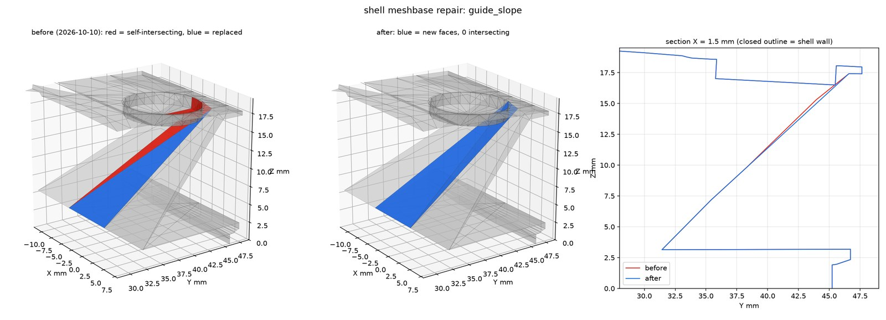
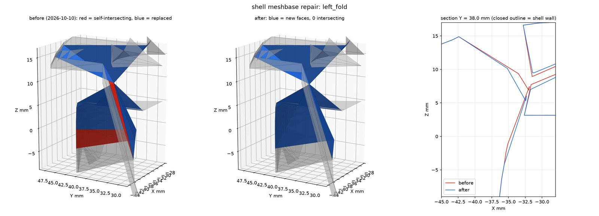
修复结果（统计见 meshbase_selfx_fix_20261011/fix_statistics.json）：
- 自交消除：两种独立的检查都从 10 对降到 0 对。一种是生成器的交线检查；另一种是分离轴检查，即对每对三角形寻找一个投影方向，看两者在这个方向上是否分开。
- 形状变化：
- 旧版被替换的 22 个面，对应新版 20 个新面，面积约 844 mm²；
- 在这些面上每平方毫米取 20 个点，表面偏差平均 0.16 mm，最大 1.26 mm；
- 体积增加 62 mm³，即 0.02%；
- 其余 16 个组件与旧版逐字节相同。
- CoACD 的反应：修复后的外壳通过了 CoACD 自己的流形与自交检查。
auto模式不再触发体素重建，结果与off逐字节相同（表 6 最后一行、图 13）。 - 旧版留档：旧版原样复制到
assets/xbox_one_s/archive/collision_meshbase_2026-10-10/；新 manifest 的previous_versions记录了归档路径、生成器提交和替换原因。
负责人确认后，这批改动作为 c1e52ed 提交（15:25）。
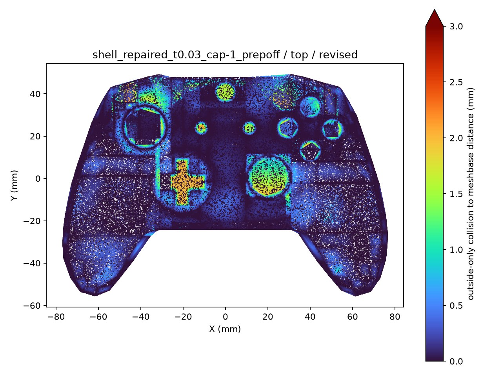
8.7 控件孔的填高分析
热力图中十字孔几乎全是橙色，负责人因此问孔是不是被填平了。我们在中立位，沿竖直方向剖开外壳碰撞底模、CoACD 凸块和控件网格做对比（图 14）：
- 十字孔：原孔深约 4–5 mm，孔口在 z ≈ 17–18 mm，孔底在 13.25 mm。凸块把孔底垫高约 2 mm，到 15.24 mm，孔口以下还有 2–3 mm 深。十字键自身的网格一直向下延伸到 z ≈ 8 mm，所以在所示剖面中，垫高的部分位于十字键下方。
- 右摇杆孔：情况相同，孔底被垫高 1.4 mm。
- A 键孔：凸块几乎完全贴合原形。
三维统计（见 fix_statistics.json）：
- 外胀超过 0.3 mm 的凸块表面采样点共 39,074 个，其中 32% 落在某个控件的中立位体积内。
- 只统计控件体积以外、靠近孔口的点时，外胀的 95 分位数为：十字键周围 1.1 mm，右摇杆孔口 1.3 mm，左摇杆孔口 1.5 mm。这个统计包含手指伸不进去的窄缝，结果偏大。
- 以上只是中立位的结果。控件运动后会不会露出原先被挡住的点、探针能否真正触达这些点，都没有评估。
我们按几何推算，十字键按到 10° 时，臂端下降约 1.8 mm；如果指尖同时压在臂端和孔口上，预计会提前约 1 mm 被凸块挡住。这是预测，没有做过接触实验。负责人决定（2026-10-11）暂时接受这个误差，等以后仿真实验确实发现影响时再修。
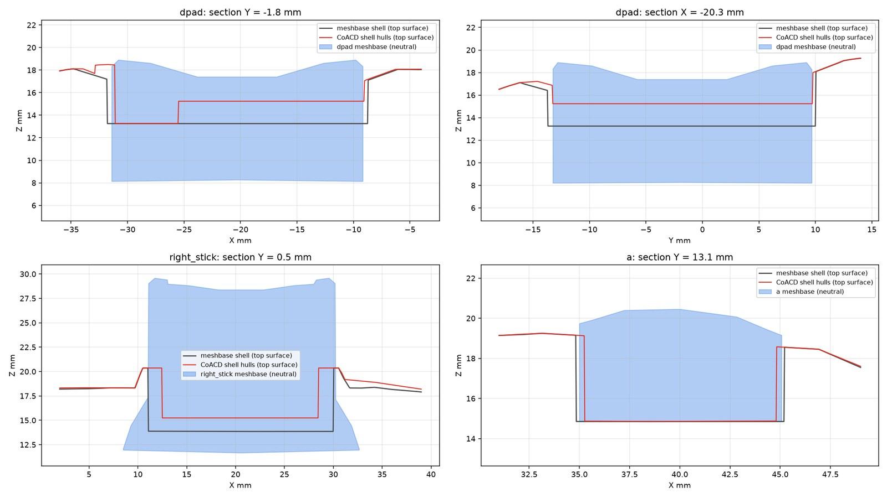
8.8 CoACD 与 SDF 碰撞体接入（阶段 B）
负责人同意（2026-10-11）把阶段 B 交给执行代理，主助手编写任务书并监督，结果在 collision_phaseB_20261011/REPORT.md。主要改动：
- 新增构建节点
collision：按第 8.5 节的参数为每个组件生成 CoACD 凸块（每个组件一个多对象 OBJ）和 SDF 网格（每个闭合壳一个文件）。max_ch_vertex显式设为 255，与阶段 A 一致；decimate关闭时这个参数不起作用。 - 换用 CoACD 碰撞体：
full_controls去掉所有基本体，改用 CoACD 碰撞体。网格按关节链逐级组合的变换矩阵，变换到各连杆的局部坐标系。 - 质量与惯量：运动部件的质量和完整惯量张量，改按碰撞底模的闭合体积计算。摇杆两层壳先求并集，体积 4.72 cm³；填充系数按
left_stick.json记录的 4 g 反推，为 0.81。机身取剩余的 0.261 kg，总质量仍为 0.28 kg。 - 加载选项
collision="sdf"：先解析 URDF，再清空原有碰撞记录，逐个连杆加上 SDF 网格。在 SAPIEN 3.0.0b1 上选这个选项，会明确报错。
主助手在写任务书时发现，原有的加载接口没有设置任何碰撞组。基本体彼此不重叠，所以以前没有暴露问题；CoACD 碰撞体会重叠，十字键的网格本来就伸进外壳孔底以下。也就是说，负责人在第 7.4 节的前提“控件与机身不碰撞”，此前并没有真正实现。阶段 B 为手柄的所有形状设置了统一的碰撞组：保留 g0、g1，令 g2 |= 0x80000000，g3 = 0x5842，沿用 v2 的约定。
各项门槛的结果见表 7，CoACD 碰撞体的叠加效果见图 15。
| 项 | 结果 |
|---|---|
| K1 资产检查 | 通过：17 个组件、19 个壳；凸性、meshbase 顶点在 10 µm 内被覆盖、SDF 网格与原网格一致都满足；外壳 121 块，与阶段 A 修复后的数组逐项相同 |
| K2 加载形状数 | 通过：3.0.0b1 + CoACD 共 236 个形状，3.0.3 + SDF 共 19 个，逐连杆与清单一致；3.0.0b1 上选 SDF 会明确报错 |
| K3 碰撞过滤与外部接触 | 通过：手柄内部接触对为 0（只撤掉过滤时，内部接触对峰值为 203）；外壳、A 键、十字键都能被外部探针压到（见正文） |
| K4 控件行程 | 通过：两种变体下，20 个关节的 40 个端点在驱动下都能到位，最差 99.45% |
| K5 质量与回归 | 通过：总质量 0.28 kg，21 个惯量张量正定；本地 118 项通过、4 项跳过，两个远端环境的回归也通过 |
| K6 缓存与打包 | 通过：第二次构建全部命中 stamp；临时 zip 中包含碰撞目录（未发布） |
| N1 掉落 | 正面朝上的两组通过；正面朝下的两组在 3 s 时末速度为 0.004–0.006 m/s，超过 1e-3 m/s，未通过 |
| N2 性能 | 首次加载：CoACD 0.62 s，SDF 1.02 s；1000 步：CoACD 0.157 s，SDF 0.120 s |
| N4 叠加渲染 | 已出图（图 15），另补一组只画凸块的图；负责人验收通过（2026-10-11） |
表 7 的几点补充：
- 外部探针（K3）：最初的外部探针没能压到 A 键和十字键。原因是探针只有 64 mg，第一步就下移了 27.3 mm，直接越过了按键。四项对照排除了碰撞组和几何方面的原因；改用受力有上限的动态探针后，两种变体都能压动按键，A 键的信号峰值为 0.795 和 0.802。资产没有改动。
- 正面朝下掉落（N1）：L3/R3 的信号接近 1，右摇杆 Y 轴的信号在 0.9 以上，说明手柄压在摇杆上，把摇杆按下或压歪了。我们推测带回中弹簧的摇杆让手柄持续轻微摇晃，但原因还没有定位。
- 执行中的错误：
- 主助手的错误有三处，都已经通过裁定更正：本地依赖安装受沙箱限制；任务书中一处门槛的归类前后矛盾；渲染用的 RoboTwin 路径已不存在。
- 执行代理有一处网络操作违规：一次远端安装沿用了默认代理，违反了“先直连”的规则。它在报告中如实记录了这一点。
- 主助手审查时，改回了执行代理对发布打包脚本的一处越界修改：它把“打包前强制重建”改成了“复用缓存”，这与任务无关。
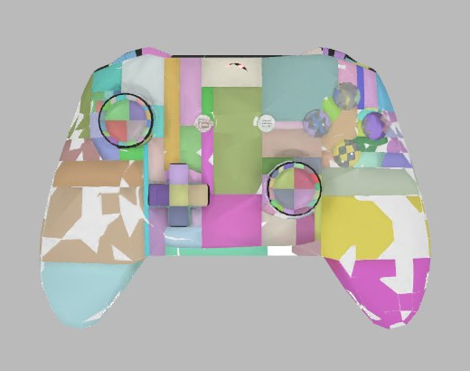
collision_phaseB_20261011/remote/coacd_overlay/，负责人已验收。小结：SDF 在 SAPIEN 3.0.3 的 CPU 管线上可用，但有配对限制。CoACD 参数经扫参和负责人确认后选定；外壳自交修复后，CoACD 两种预处理模式的输出一致。两种碰撞体都已接入，关键门槛全部通过；手柄内部的碰撞过滤，直到接入时才真正实现。
9 实验组六：工程基础设施
目的：让资源可以构建、缓存和分发，并能在 GPU 节点上可靠地运行和回归测试。
9.1 构建时生成资源
负责人提出了三点要求：
- 生成的资源与源文件一起提交、再靠测试检查两者是否同步，是不健康的维护方式，资源应当在构建时生成（2026-10-10 19:02–19:03）；
- 代码工程可以表示为无环的依赖图，下游发现上游产物的版本不一致时，重新生成即可，就像 make 一样（21:04）；
- wheel 不包含任何资产；资源随 GitHub Release 的 zip 发布，也支持首次使用时在本地构建（19:09–19:12）。
相应的实现（提交 e6e634a、e2442b7）：
- 运行时资源按
scripts/build_resources.py中的依赖图生成。每个节点为自己的输入内容记一份私有摘要，称为 stamp，输入不变时就跳过。 - 测试和 manifest 中不断言哈希。负责人专门讨论过：执行代理容易在代码里塞哈希校验，并因此被反复卡住（21:02）。
- Python 安装包（wheel）只含代码；缓存放在工程目录内，不写入用户主目录。
- MuJoCo 资源目前冻结在
src/xbox_gamepad_physics/resource_data/mujoco/，构建时原样复制。
验收结果（resource_build_v1）：
- 首次构建 0.98 s，命中 stamp 时 0.03 s；
- 与迁移前的 75 个资源文件逐个比较，完全一致；
- 只修改一个输入时，只有两个下游节点重建；
- 第一次构建的备用 wheel 中有 117 个资源文件，其中 42 个来自 10 月 8 日残留的
build/lib，清理后为 75 个； - 下载流程只在本地 HTTP 服务上验证过，包括锁文件校验、并发安全和失败后保留旧缓存；GitHub Release 至今没有发布。
同期还有几处方向调整（附录 C）：
- 把资源移进 Python 包的提交被撤回；
- 删除过度设计的验证逻辑（
3327e11）； - RoboTwin 加载接口的数值检查，改为只在构建产物上检查一次（
4be4601）。
9.2 GPU 冒烟、回归与实验平台
本节 10 月 10 日的运行，都在当时的 GPU 节点 SHARED_GPU_NODE 上进行，使用的是那台机器上的 RoboTwin 环境（/pfs/.../envs/robotwin）。负责人后来纠正，项目的 GPU 节点是 GPU_NODE（第 8.2 节）。这些结果仍然有效，只是运行环境与第 10 节的复现入口不同。
冒烟测试（sapien_smoke_20261010）。在真实 SAPIEN 3.0.0b1 上，完整控件的端点、往返和数值有限性检查全部通过。同一轮的 fast 回归有 1 项失败、7 项错误，原因有两个：
- 远端环境中，第三方包 azure-cosmosdb-table 误带的
tests包遮蔽了仓库的测试命名空间； - 有些测试依赖安装元数据。
修复提交 07507e0 记录的结果是“108 tests, 2 MuJoCo skips”，原始日志没有保存，通过数无法独立复核。
实验平台（822f437）。仓库根目录的 run_robotwin.py 读取 configs/*.yaml，每次运行把覆盖后的配置、版本信息和指标写到 build/runs/ 下。这个设计是负责人要求的：入口放在根目录，配置使用 YAML（2026-10-10 23:02–23:07）。
- 两份配置都在 GPU 节点上运行成功，负责人确认渲染“通过”（23:51）。
- 本地回归：110 项通过、4 项跳过。远端没有 Node，JS 测试没有执行，所以 fast 脚本整体返回 1。
- 同步时漏传过一个 Git 树对象，SSH 也曾连续三次断开，两者都在实验执行前恢复。
- 远端验证是在负责人同意移走那个第三方
tests包之后进行的。
当前状态。阶段 B 之后，本地 fast 回归结果为：Python 118 项通过、4 项跳过；JavaScript 34 项全部通过。跳过的 4 项分别缺 torch、MuJoCo（两项）和 SAPIEN，原因是可选依赖缺失或 MuJoCo 冻结，跳过不计为通过。
小结：资源构建流程已经实现，在本地验证过，尚未正式发布。GPU 节点上的冒烟测试和回归都已通过，期间的环境变化已经记录在案。
10 复现入口
以下命令都来自仓库的真实入口，在仓库根目录运行。
环境要求：
- Python 3.10 或项目自己的 conda 环境；
- JS 测试需要 Node 22 和 npm（先执行
npm ci）；实验平台需要 PyYAML； - 生成碰撞体需要
[build]extra 中的 coacd 1.0.14 和 manifold3d 3.5.4； - SAPIEN 相关步骤在 GPU 节点 GPU_NODE 上运行：3.0.0b1 用负责人已有的只读基础环境
/path/to/gpu-data/robotwin-benchmark/envs/robotwin，3.0.3 用叠加在它上面的虚拟环境；仓库从本地同步到远端的运行镜像。
每一步都写明了预期结果；结果不符时先停下排查，不要继续后面的步骤。
- 安装并构建资源：
预期：七个节点依次重建；再次运行时全部显示python3 -m pip install -e ".[build]" python3 -m xbox_gamepad_physics build-resourcesskip (stamp hit)。任何一个节点失败时停止。 - 检查就绪状态：
预期：退出码 0，输出python3 -m xbox_gamepad_physics verify --backend all --profile full_controlsmissing: none。这一步只检查声明和文件，不启动仿真器。 - 运行回归：
预期：退出码 0。记下所有跳过的测试及原因。npm ci python3 scripts/run_regression.py fast - SAPIEN 冒烟（在 GPU 节点上）：
预期：python3 run_robotwin.py configs/smoke_full_controls.yaml --set params.steps=20 python3 run_robotwin.py configs/smoke_full_controls.yaml --set gamepad.collision=sdf # 仅 SAPIEN 3.0.3metrics.json中的passed为 true。 - 碰撞底模检查：
预期：2 项通过，其中一项检查每个壳都没有自交。如果缺少 numpy，几何检查会被跳过，不能算通过。python3 -m unittest tests.infrastructure.test_collision_meshbase_asset -v - 重现碰撞底模（可选，需先完成第 1 步）：
预期：输出的python3 scripts/build_collision_meshbase.py --output /tmp/meshbase --visual build/resources/common/xbox_one_s/visualmeshes/与assets/xbox_one_s/collision_meshbase/meshes/逐字节相同。源网格不同、或任何一个壳自交时，生成器会报错停止。
多数实验结果放在已被 Git 忽略的 build/experiments/ 中，克隆仓库时不会带出；大网格和逐帧轨迹留在 GPU 节点上。扫参和 SDF 基准的脚本在 build/experiments/collision_sweep_20261011/，只用于复查第 8 节的数字。
11 局限与下一步
11.1 结论的适用范围
- 物理参数：质量、刚度、阻尼、摩擦和预紧都是有来源的估计值或仿真设置，没有一项来自 Xbox One S 实物测量。
- 几何：尺寸只在整机宽度上与厂商数据一致；局部尺寸、内部结构和关节轴心来自作者动画。
- 碰撞体：结论只适用于 CoACD 1.0.14、SAPIEN 3.0.0b1 与 3.0.3 的 CPU 物理，以及报告中的测试设置。“内缩为零”是采样得出的结论；孔口外胀的影响只在中立位做过几何分析，没有做过接触实验。
- 抓取：两轮抓取实验都没有成功的 episode，不能用来判断手柄碰撞体能否支持抓取。
- 验收：V01–V07 视频和球体接触套件的视觉验收还在待确认清单中；阶段 B 叠加图已验收。
- SAPIEN 3.0.3：升级只验证到专家采集流程和本仓库快照的冒烟测试，版本对专家规划成功率的影响没有定论。
11.2 下一步（计划）
- 在 RoboTwin 中做灵巧手的接触与操控验证（见
docs/plan.md第 2.2 节）。 - 查明正面朝下掉落时手柄持续晃动的原因。
- 用真实手柄测量按键的力-位移曲线，以及扳机和摇杆的回中特性，替换估计值（
docs/pending_user_review.md）。 - 灵巧手抓取实验改用包拢型抓取，并采用文献中的验证方法（第 3.3 节）。
12 结论
我们在开源的 Xbox One S 视觉模型上，搭建了一套可交互的物理手柄：
- 外观复现了负责人选定的渲染效果；
- 20 个活动关节由一份公共运动规格描述，并通过 32 维状态格式与游戏信号双向对应；
- 两个仿真后端的信号链路一致；
- 碰撞方面，从闭合的碰撞底模出发，生成了 CoACD 和 SDF 两种碰撞体。
过程中最重要的方法经验有三条：
- 碰撞体的问题多数出在输入，例如空心薄皮、网格自交，而不在分解方法本身；
- 测试装置会制造假失败，例如默认的接触偏移、过轻的探针，以及“固定根加运动学探针”的组合；
- 指标定义要先用已知答案验证，否则内部切面会被误报成 16.8 mm 的外胀。
当前的主要边界是：物理参数都是估计值；碰撞体在灵巧手接触下的表现和实物标定都还没有验证。
附录 A：实验索引
表 8 列出 build/experiments/ 下的全部条目。这些目录已被 Git 忽略，只代表当次运行，大文件留在 GPU 节点上。“日期”列取自目录内文件的修改时间（UTC+9），只表示文件写入的时间。
| 目录或文件 | 日期 | 内容 | 章节 | 状态 |
|---|---|---|---|---|
1708_ifixit_front.jpg | 10-06 | 1708 拆解参考图（本地，不分发） | 4.1 | 参考 |
spec_audit.json | 10-07 | 1708 规格审计，19 个未决物理字段 | 4.1 | 历史 |
legacy_casper_1914_visual_parts/ | 10-06 | Casper 44 件审计与身份渲染 | 4.1 | 不作为 1708/One S 的目标；作为 1914 外观候选存档 |
legacy_casper_1914_width_scaled_1708_proxy* | 10-06–07 | 宽度缩放、去掉 Share 键的历史代理及截图；有一张截图的 1708 标签有误 | 4.1 | 仅历史 |
legacy_casper_1914_native_unit_button_collision_candidates/ | 10-07–09 | Casper 按键凸包候选（原生单位） | 4.1 | 未采用 |
fcc_p7_layout.json | 10-06 | FCC 照片标尺换算 | 4.2 | 仅诊断 |
pcb_registration_v1.json、pcb_registration_mirrored.json、pcb_holes_v1.json | 10-06 | PCB 照片配准与孔位拟合 | 4.2 | 未得到标定 |
alpakka_cad_reference_audit.json | 10-06 | Alpakka CAD 常数核对 | 4.2 | 仅参考 |
switch_pro_wesk/、switch_pro_lucasmunillaclavero_UNVERIFIED/ | 10-06 | Switch Pro 候选渲染 | 4.3 | 存档 |
xbox_one_s_batonyrobson_UNVERIFIED/ | 10-06–09 | 选定模型的清单、骨骼与动画审计、渲染（目录名沿用历史命名） | 4.4 | 已采用 |
stick_sphere_fit.json、button_surface_axes.json | 10-06 | 旧代理上的摇杆表面球心拟合、按键表面主轴，都不是轴心标定 | 附录 B | 未采用 |
stick_envelope.json | 10-06 | 摇杆倾角包络 | 6.1 | 采用（保守近似） |
coordinate_reference.json | 10-06 | 跨语言坐标测试夹具（合成数据） | — | 测试用 |
xbox_sketchfab_viewer_reference/ | 10-06 | Sketchfab 官方查看器截图与设置 | 5.1 | 参考 |
xbox_official_import_comparison/ | 10-06–09 | Blender 导入版本、色彩变换和环境光对比 | 5.1 | 已选定 |
xbox_material_diagnostics/、xbox_native_gltf_materials/ | 10-06 | 贴图解码与材质绑定诊断，含一个 UV 错位的诊断变体 | 5.1 | 诊断 |
controller_review.html、browser_*.json、合成鼠标截图 | 10-06–07 | 早期浏览器交互测试，对象是旧代理；有一次导航停滞，原因未明 | 附录 B | 历史 |
viewer_material_repair/ | 10-08–09 | 透明绘制与高光贴图修复 | 5.2 | 已修复 |
approved_cycles_reuse/ | 10-08 | Cycles 复现、摇杆求解器修复、全新克隆复测 | 5.2 | 已通过 |
checklist1_clean_clone/ | 10-08 | 更早一次的全新克隆浏览器检查 | 5.2 | 历史 |
native_viewport_pilot/ | 10-08 | Blender 原生视口延迟试验 | 5.2 | 未采用 |
robotwin_visual_stage/ | 10-08 | RoboTwin 视觉接入 | 5.3 | 负责人确认 |
mujoco_visual_stage/、mujoco_filament_opacity_fix/ | 10-08–09 | MuJoCo 原生与 Filament 视觉 | 5.3 | 已运行，未验收 |
xbox_one_s/ | 10-11 | 运动学构建审计 | 6.1 | 已通过 |
robotwin_left_stick_estimated_v0/ | 10-09 | 左摇杆切片与 27 组敏感性检查 | 6.2 | 负责人确认 |
gamepad_overlay_left_stick_circle/ | 10-09 | 单位圆轨迹的虚拟手柄叠加视频，由回读状态驱动 | 6.3 | 已运行 |
robotwin_full_controls_estimated_v0/、mujoco_full_controls_estimated_v0/、full_controls_backend_comparison.json | 10-09 | 完整控件与两后端对照 | 6.3 | 已运行 |
full_controls_user_review/ | 10-09 | V01–V07 双后端检查视频 | 6.3 | 待验收 |
robotwin_task_integration/ | 10-09 | 接入真实 RoboTwin 任务生命周期 | 6.3 | 已运行 |
robotwin_sphere_contact_preview/、robotwin_sphere_contact_review/ | 10-09 | 球体接触预览与 38 段正式视频 | 6.4 | 待验收 |
free_root_excitation_diagnostic* | 10-09 | 自由根晃动与撞击诊断；v2 和最终版只重做了视频 | 6.4 | 诊断 |
friction_threshold_binary_20261009/、friction_threshold_binary_deadzone_001/ | 10-09 | 摇杆摩擦临界值的二分搜索 | 6.4 | 采用 0.1 |
integrated_regression.json、full_regression.json | 10-09 | 早期软件回归记录 | 9.2 | 历史 |
button_collisions/ | — | 空目录 | — | 无内容 |
collision_generation/ | 10-10 | 早期整件 CoACD 预览图 | 7.1 | 未采用 |
collision_v2_review/、collision_v2_snapshot/ | 10-10 | 碰撞体 v2 与未提交的代码快照 | 7.1 | 未采用 |
collision_v2_diagnosis/ | 10-10 | H1–H8 诊断 | 7.2 | 已完成 |
g20_grasp_v1/、g20_grasp_v2/ | 10-10 | G20 抓取 v1 与 v2 A 轮 | 7.3 | 无成功 episode |
shell_closed_v1/、shell_closed_v2/ | 10-10 | 外壳自动闭合尝试与手工文件包 | 7.4 | 按门槛停止 |
collision_meshbase_v1/ | 10-10 | 碰撞底模的生成与渲染 | 7.5 | 已提交 |
resource_build_v1/ | 10-06–10 | 资源构建迁移验收 | 9.1 | 已提交 |
sapien_smoke_20261010/ | 10-10 | GPU SAPIEN 冒烟（SHARED_GPU_NODE） | 9.2 | 冒烟通过，回归问题已修复 |
platform_20261010/ | 10-10 | 实验平台验证（SHARED_GPU_NODE） | 9.2 | 已提交 |
robotwin_sapien303_20261011/ | 10-11 | RoboTwin 升级 SAPIEN 3.0.3：A/B 对照、重复实验、手柄包检查 | 8.2 | 部分完成后取消 |
sdf_pair_probe_20261011/ | 10-11 | SDF 碰撞配对探测（含重跑结果） | 8.2 | 已运行 |
collision_sweep_20261011/ | 10-11 | CoACD 扫参、自交诊断、SDF 基准 | 8.3–8.5 | 参数已选定 |
meshbase_selfx_fix_20261011/ | 10-11 | 自交修复对比、CoACD 复查、孔位剖面、统计 JSON | 8.6–8.7 | 已提交（c1e52ed） |
report_review_20261011/ | 10-11 | 本文第 1 版的独立审阅，以及负责人原话的导出 | — | 已用于第 2 版 |
collision_phaseB_20261011/ | 10-11 | CoACD/SDF 接入验证 | 8.8 | 负责人验收通过 |
附录 B：过程中的失败、返工与作废结果
表 9 列出正文中没有展开的失败、返工和作废结果。被作废的结果只用于复现当时的失败，不作为结论的依据。
| 阶段 | 发生了什么 | 处理与证据 |
|---|---|---|
| Casper 候选 | 按 1708 宽度缩放、去掉 Share 键的代理，在历史截图中被错误标注为 1708 | 只作历史回归夹具，不作身份证明（references/geometry_review.json） |
| 旧代理上的几何拟合 | 摇杆表面球心拟合、按键表面主轴、原生单位下的按键凸包 | 都没有公制尺度，也不能作为轴心标定，未采用 |
| 浏览器测试 | 有一次导航停滞，原因未明；后来的测试成功，但对象是旧代理 | browser_navigation_diagnosis.json |
| 材质诊断 | 一个贴图变体的 UV 错位 | 只作诊断，不是修正后的资产 |
| 碰撞体 v2 诊断 | 默认 10 mm 接触偏移、胶囊支撑设置、过轻的恒力球，导致多份结果作废 | 作废文件与有效的替代文件，在诊断报告末尾逐一列出 |
| G20 v1/v2 | 见表 3；另修过中节名称、mimic 步长和两次 Qhull 数值异常 | 修复后 387 个 ε 全部复核，没有改变任何通过判定 |
| 外壳闭合 v2 | 前板埋入失败（400/1135）；精确布尔并集出现非流形；桥接后外部仍可达；窗口外沿找不到闭环 | shell_closed_v2/diagnostic_stop1–3 与主报告 |
| 手工文件包 | 导出过程中修过若干实现错误 | 见 manual_kit/README.md 的修复记录 |
| meshbase v1 | A、B 的字形片被误认为主块；补面索引在后续删面后失效；摇杆特写的平均法向互相抵消，图画错了 | 改为按 64 面键帽识别；重新记录索引、重新渲染，几何不变 |
| 资源构建 | wheel 中混入 42 个残留的旧文件 | 清理残留的 build/lib 后为 75 个 |
| 实验平台 | 同步时漏传 Git 根树对象；SSH 三次断开 | 补传、重试，都在实验执行前恢复 |
| SAPIEN 3.0.3 对照 | 用错节点；conda 克隆失败，手工补链接后作废；记录器提前退出 | 第 8.2 节 |
| CoACD 扫参 | 三版指标定义；auto/200 首次被系统终止；SDF 配置字段名写错；续跑覆盖了部分日志 | execution_notes.json；中间版指标另存为 metrics_old.json 等文件 |
| 阶段 B | 依赖安装受沙箱限制；门槛归类前后矛盾；渲染路径不存在；探针过轻；一次网络操作违规；打包脚本被越界修改 | 第 8.8 节；collision_phaseB_20261011/REPORT.md |
附录 C：提交历史中的路线调整
| 提交 | 内容 | 后续 |
|---|---|---|
3327e11（10-08 00:46） | 删除过度设计的验证逻辑，约 8,700 行 | 此后验证工作改为与风险相称 |
577cdb8 → c4e46f1（10-08 15:13 → 15:16） | 把运行时资产移进 Python 包，3 分钟后撤回 | 撤回原因没有书面记录；10-10 改为构建时生成，wheel 只含代码（e6e634a、e2442b7） |
c6d4af3 → 4a753d4（10-08 15:47 → 16:01） | 把 Blender 的灯光和 Filmic 设置迁移到浏览器端，14 分钟后撤回 | 负责人指定历史 Cycles 图为标准，查看器改为直接用 Cycles 出图（914490f） |
b455165（10-08 17:31） | 交付重点从浏览器查看器转向仿真器原生资产 | 随后接入 RoboTwin 与 MuJoCo 的视觉（第 5.3 节） |
4be4601（10-10 22:58） | RoboTwin 加载接口只做 API 层面的检查，数值保证移到构建产物上检查一次 | 主助手实现，执行代理交叉审阅 |
c1e52ed（10-11 15:25） | 修复碰撞底模的自交，旧版归档 | 第 8.6 节 |
参考文献
- [1] BatonyRobson. Xbox One S Controller/Gamepad (Animated). Sketchfab, CC BY 4.0. https://sketchfab.com/3d-models/xbox-one-s-controllergamepad-animated-a62cf7475b7d4ead9fbf1a86e5a2b6a4
- [2] Microsoft. Xbox One Controller + Cable for Windows, Technical Data Sheet（修订 1611A）. download.microsoft.com
- [3] F. Xiang, Y. Qin, K. Mo 等（共 14 位作者）. SAPIEN: A SimulAted Part-based Interactive ENvironment. arXiv:2003.08515, 2020. https://arxiv.org/abs/2003.08515
- [4] SAPIEN 发布页（PyPI）：3.0.3 发布于 2026-03-10，3.0.0b1 发布于 2024-05-22. https://pypi.org/project/sapien/3.0.3/（访问于 2026-10-11）
- [5] NVIDIA. PhysX 5.3.1 SDK Documentation: Geometry. https://nvidia-omniverse.github.io/PhysX/physx/5.3.1/docs/Geometry.html（访问于 2026-10-11）
- [6] SAPIEN API 文档：
PhysxCollisionShape（碰撞组规则、接触偏移默认值）. https://sapien-sim.github.io/docs/api/sapien.pysapien.render.html - [7] X. Wei, M. Liu, Z. Ling, H. Su. Approximate Convex Decomposition for 3D Meshes with Collision-Aware Concavity and Tree Search. ACM SIGGRAPH 2022. arXiv:2205.02961. https://arxiv.org/abs/2205.02961；代码 https://github.com/SarahWeiii/CoACD
- [8] A. Jacobson, L. Kavan, O. Sorkine-Hornung. Robust Inside-Outside Segmentation using Generalized Winding Numbers. ACM SIGGRAPH 2013. https://igl.ethz.ch/projects/winding-number/
- [9] T. Chen, Z. Chen, B. Chen 等（共 26 位作者）. RoboTwin 2.0: A Scalable Data Generator and Benchmark with Strong Domain Randomization for Robust Bimanual Robotic Manipulation. arXiv:2506.18088, 2025. https://arxiv.org/abs/2506.18088
- [10] K. Xu, Z. Huang, S. Luo, Z. Zeng, F. Shi. Real-IKEA: Physical Fidelity is the Prerequisite for Robust Manipulation. arXiv:2606.08564, 2026. https://arxiv.org/abs/2606.08564
- [11] R. Wang, J. Zhang, J. Chen 等（共 7 位作者）. DexGraspNet: A Large-Scale Robotic Dexterous Grasp Dataset for General Objects Based on Simulation. arXiv:2210.02697, 2022. https://arxiv.org/abs/2210.02697
- [12] T. Mu, Z. Ling, F. Xiang 等（共 9 位作者）. ManiSkill: Generalizable Manipulation Skill Benchmark with Large-Scale Demonstrations. arXiv:2107.14483, 2021. https://arxiv.org/abs/2107.14483
- [13] sevaht. gamepad-overlay，提交 31236cd，The Unlicense. https://github.com/sevaht/gamepad-overlay
- [14] LinkerBot. linkerhand-urdf，提交 075cc7d，目录
archive/lhg20/left. GitHub - [15] RoboTwin-Platform. RoboTwin，固定使用提交 ea8b211. https://github.com/RoboTwin-Platform/RoboTwin
- [16] SDL Wiki. SDL_GamepadAxis、SDL_GamepadButton. https://wiki.libsdl.org/SDL3/SDL_GamepadAxis，https://wiki.libsdl.org/SDL3/SDL_GamepadButton
- [17] Microsoft Corporation. FCC ID C3K1708, Internal Photos 1708_Rev（fccid.io 公开镜像）. https://fccid.io/C3K1708/Internal-Photos/Internal-Photos-1708-Rev-3019207
- [18] Poly Haven. Boiler Room HDRI. https://polyhaven.com/a/boiler_room
- [19] ALPS ALPINE. RKJXV122400R 摇杆模块产品页（操作角 23°、方向操作力矩 14±10 mN·m、按压 7.4±3 N、行程 0.4 mm）. https://tech.alpsalpine.com/e/products/detail/RKJXV122400R/
- [20] ALPS ALPINE. SKPMAME010 轻触开关产品页（操作力 1.57 N、行程 1.3 mm）. https://tech.alpsalpine.com/e/products/detail/SKPMAME010/
- [21] C. Ferrari, J. Canny. Planning Optimal Grasps. Proc. IEEE International Conference on Robotics and Automation (ICRA), 1992, pp. 2290–2295. https://www.research.unipd.it/handle/11577/2532028
- [22] 5o1. mujoco fork，分支
concon/filament-opacity-texture，提交 fbeb31381564ae71e9efcdf3189d1ffbf5033269. https://github.com/5o1/mujoco/tree/concon/filament-opacity-texture